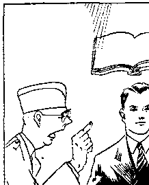
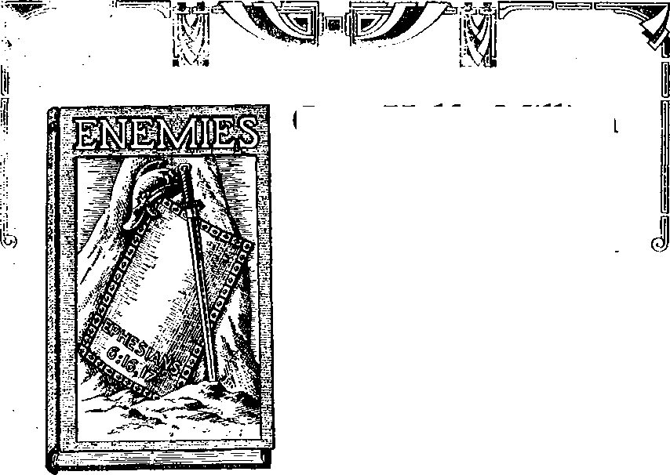

Contents
Suppression, Distortion and
Reversal of News
The Press
Australian Convention of
Jehovah’s witnesses
Home and Health
The AMA War on Drugless Healing
Blood-Pollution Is “Legal”
Cottonseed Oil for Dinner ?
Voluntary Slavery
Your Questions Answered
by Judge Rutherford
Among the Religion-Mongers
Fascism in America
Fascism in Italy
Fascism in Spain
Fascism in Germany .
Fascism in Greece
Japan z
Russia
Labor
Pinning on the Medals
By Trail and Stream and
Garden Path (Snowflakes)
For Safer Highway Navigation
Published every other Wednesday by THE GOLDEN AGE PUBLISHING COMPANY, INC.
117 Adams St., Brooklyn, N. U. S. A President Clayton J. Wood worth
Vice-Pre* Ide nt Nathan H. Knorr
Secretary end Treasurer Charles E. Wagner
Five Cents a Copy
41 a year in the United States |1.25 to Canada and all other countries
NOTICE TO SUBSCRIBERS
Remittance*: For your own safety, remit by postal or express money order. When coin or currency Is lost in the ordinary malls, there i* no redress. Remittances from countries other than those named below may be made to the Brooklyn office, but only by International postal money order.
Receipt of a new or renewal subscription will be acknowledged only when requested. Notice of Expiration is sent with the Journal one month before subscription expires. Flease renew promptly to avoid loss of copies. Send change of address direct to us rather than to the post office. Your request should reach us at least two weeks before the date of issue with which it is to take effect. Send your old as well as the new address. Copies will not be forwarded by the post office to your new address unless extra postage is provided by you.
Published also in Bohemian, Danish. Dutch, Finnish, French, German. Greek, Japanese, Norwegian, Polish, Spanish, Swedish.
OFFICES FOR OTHER COUNTRIES
England 34 Craven Terrace. London, W. 2
Canada 40 Irwin Avenue, Toronto 5, Ontario Australia 7 Beresford Road. Strathflbld, N.S.W. South Africa 623 Boston House. Cape Town
Entered as second-class matter at Brooklyn, N. Y„ under the Act of March 3, 1379,
Appetizer
■ A Savannah Lady’s Nice Present
♦ The Savannahian was leaving for New York, She had about finished packing when her husband came into the room to get the luggage and, as a parting gift, presented her with a fifty-dollar bill, telling her to buy her self a nice present in New York,
The lady had failed to make reservations ahead of time, and, when she reached the station, found that there were no accommodations to he had unless she wished to share a compartment with a woman who had boarded the train farther south. The arrangement was satisfactory, and her traveling companion proved to be a cultured, congenial person. The trip was a pleasant one until the train was but a few hours from New York-
The Savannahian started for the dining car, but, after walking through several coaches, discovered that she had left her purse. She started back for it, unworried because her companion had been in the compartment when she left. The purse was right where she had left it, and she thought nothing of it until she opened it to pay for her meal. The fifty-dollar bill was gone.; She was certain that the purse had not been out of her sight except when she had forgotten it a few minutes before. Only one person could have stolen that fifty-dollar bill. That was certain. But she couldn’t bring herself to accuse her companion of stealing. She knew that she could get her money back by reporting the matter to the conductor, but that would mean jail for the other woman at the next stop. No, she decided, it wasn’t worth it. Let her keep the fifty dollars.
When the Savannahian returned to the compartment, she found it unoccupied, but there on the seat was her companion’s purse. Quickly the Savannahian opened it and, as she expected, found the fifty-dollar bill. She put the ' money into her own bag, and said nothing to the other woman when she returned.
While in New York the Savannahian spent her fifty dollars on a new coat, and this coat was the first thing her husband commented on when she got off the train in Savannah. She told him that it had been purchased with his present. With a surprised look on his face he answered: “But you left that money lying on your dresser.’’—Savannah Morning News.
CONSOLATION
“And in His name shall the nations hope.”—Matthew 12:21, A. R.V.
Volume XIX Brooklyn, N. Y., Wednesday, December 1, 1937 Number 475
Suppression, Distortion, and Reversal of News
SATAN’S kingdom is kept alive by the suppression, distortion and reversal of news. The way the Scriptures put it is that “the god of this world hath blinded the minds of: them which believe not, lest the light of the glorious gospel of Christ, who is the image of God, should shine unto them’’.—2 Corinthians 4:4.
At eleven o’clock oiie winter night this writer left a street ear and hurried toward .a railroad station, to catch a night train. He had passed a street corner about a hundred feet when he heard a crash; a man had been struck by a swiftly moving automobile, and was evidently fatally injured. Moving quickly to the scene it was disclosed that, the occupants of the car were a wealthy citizen and his wife, and a judge from a city 150 miles away. The car had been running too rapidly and not over two feet from the curb. An innocent Italian, hastening home, had not observed the onrushing car. The woman in the ear said to the writer, truthfully and with evident distress, “He stepped off the sidewalk directly in front of the car.” '
The wealthy man and the judge tried to lift the stricken man to his feet. It was impossible; both legs and one arm had been broken by the force of the blow. It was bitterly cold; it was evident the man was fatally hurt. Something must be done instantly. The wealthy citizen and judge were too addlepated (probably from liquor) to know what to do; so this writer said urgently: “Stop trying to drag that man to his feet; can’t you see his legs are broken and he is dying? Hurry up and get him into the car before he freezes, while I see if we can’t get immediate help.” They did as requested.
The accident occurred in front of a drug store, but though night lights were on, the store was closed. There seemed nothing else to do, so this writer shouted in a voice that could be heard for blocks, “Police! Police!” In a minute or so a crowd gathered, and as they drew up, this party, not having been born yesterday, went on to his train; but wrote back requesting newspapers containing the story of what had happened.
The story published in the leading newspaper of the city showed the skillful co-operation of local police, reporters, and editors, to prove that the death of the poor Italian citizen was an aid to the community, and that the wealthy citizen and the judge had performed a great if unintentional act of justice. It narrated that this Italian (who died within four hours the same night) had been standing in the street talking to another Italian (which was an absolute, complete and infernal lie, hatched up to protect the man of wealth and the judge). On the other Italian were “found” a revolver and a set of brass knuckles.
The story was protected by “placing” in the car on the night of the accident a fourth person who was not there at all. The whole thing was fixed up by the police, the reporter, the editor, the judge and the man of wealth so as to make sure that the truth would never come out. Had the truth been revealed all five of the "persons of influence just named would have emerged whitewashed and means Would have been found to do with this witness of Jehovah as was done with the innocent Italian. These are facts.
To this day the family of that innocent Italian do not know and can not know that he went to his grave under a cloud only because he was run over by a drunken millionnaire and was in the company of a judge who still had enough cleverness to know how to turn the truth into a lie and make manslaughter look like a good thing to the community. It was a good job and the Devil was well pleased, because it was all “regular” arid was successful. It east no reflections upon his people or his “civilization”.
Honest Men Know and Admit This
Honest men know and'admit that the truth has no place in any paper if it interferes with the interests of the publisher, his advertisers or his friends. This writer sauntered up to an officer on the Brooklyn Bridge one day and in a friendly way asked how long he had been on the force. ‘‘Twenty-five years,” “You have been in lots of thrilling situations?” “Yes, lots of them.” “You have read the reports afterwards?” “Yes, often.” “How many of those reports stated the facts, as you knew them to exist?” “Not a single one.” The point of this is that reporters are sent out to get stories, not facts.
In an article published in The American Mercury Eugene A. Kelly wrote of the science of publicity as controlled by the government at Washington:
Highly paid reporters are referred to by members of their trade as “trained seals”, . . , That Washington dispatches are replete with inaccuracies, falsehoods and propaganda, sometimes unwittingly inserted and often consciously injected into the news, no sane man can deny. The situation in Washington is so bad, in fact, that the better national business houses do not believe what they read in the newspapers regarding matters of national moment, but maintain their own corps of reporters to verify facts before any 'action is taken. . . .
The government official presiding at the press conferences assumes the pomposity of a hick-town judge in court. The reporters lean forward with popping eyes, gingerly scribbling each word of wisdom as it drops from the mouth of the potentate. Their attitude, generally speaking, is one of supine inoffensiveness, and it is the practice of the younger element to fawn upon, adulate and almost osculate the officials with whom they deal at press conferences. . . .
Mussolini and Hitler, openly and without question, suppress the press in their countries. Mr. Roosevelt and their cohorts accomplish the same end, in a much subtler way. While the government has taken no overt action to kill or suppress the dissemination of news, the fact remains that there is an imperceptible, albeit powerful, move to see that newspapers print only what the Administration wants them to print. ' '
. An unbiased and complete investigation would reveal that there is not the slightest excuse for the vast horde of ballyhoo artists who jam the government bureaus today. They serve, not the taxpayers with whose funds they are paid, but the jackasses who need their powerful pens to impress a gullible public with their intrinsic worth and nobility of soul. Removal of the press agents from the government trough would gladden the hearts of all reporters and the taxpayers alike. The publicists would not be without jobs, for they could return to fiction writing, in which endeavor their Uncle Sam has given them a good schooling.
Jesuits Are Past Masters
The Jesuits are past masters of the gentle art to which reference has just been made, and in a later issue copious extracts will be quoted from the “Secret Instructions of the Jesuits” from which it will be apparent to all in how high esteem those who now control the American Press hold their usefulness to the great system of which they are such an essential part. There is simply no limit to what the Jesuits believe they can make the people swallow, and it must be admitted that they get ' away with their conceited schemes in a most remarkably efficient manner. An adverb or adjective in a headline may do the trick.
The Staten Island Advance contains an account of the collapse of the New Brighton (Staten Island) tenements, which buried 19 in the ruins. The heroes, so it seems, were “Reverend Rather” Jordan, “Reverend Father” Karpinski, “Reverend Father” Tobin, and “Reverend Father” Gloss, and it took four columns to tell about their anointing the dead bodies with oil, which is like throwing a man a toothpick in the mythical hades of the past generation, and asking him to make a fire escape with it, with which to climb to heaven. The account was so interested in ballooning the priests that “administered extreme unction (the last rites of the Catholic Church) ” (and of not the least possible benefit to anybody) that it mentioned only 5 of the 19 victims by name. Getting the names of the priests into the paper, and having it look as though they were the principal actors and sufferers, was the whole publicity scheme, as worked.
When President Roosevelt in his Chicago speech encouraged the three hoodlum nations to see that the democracies they despise were awake and angry, the eyes of the whole world were upon him, and intended to be so. Immediately afterward the entire parade proceeded to Cardinal Mundelein’s residence. There the president and the cardinal dined in private, but newspapermen were made welcome at a buffet and the president and the cardinal posed together for a picture, which was sent' all over the world as evidence that Fascism (Catholic Action) is next to the president’s heart. The three jackass nations .will understand therefore that what he,said is not to be taken too seriously, but was for political effect upon the American people.
Robbery and
Murder Glorified
Michael Williams is editor of The Commonweal. With others, under the name of the ' ‘ American Committee for Spanish Relief”, he staged a big meeting in the Hippodrome, New York city, and succeeded in partially filling it with Catholics humbugged into attending. Financially it was quite a success. Mike and the rest of the crowd picked up $30,753.96 in “contributions ’ of which they charged $25,793.72 to “administration and publicity”. The difference amounted to so little that they concluded %not to send anything at all to Spain; and that is what was sent. Just that—nothing—not a cent. And that was what Mike and his friends wanted. They desired to stage something that would prevent the American people from lending any aid whatever to the poor people of Spain, desperately trying to get some relief from the triple-crowned old villain that for centuries has had his legs ■wrapped around the Spanish Sindbad’s neck. They planned to discredit honest relief of a suffering people, and succeeded very well. And they were well paid, too, for their “administration and publicity”. *
While the American (?) Legion was having a convention at York, Pa., August 21, 1937, and police regulations were being ignored, as is customary under such circumstances, Gordon Chronister, 217 Front street, York, Pa., one of Jehovah ’s witnesses, was driving slowly home in the crowded streets. Held up in a traffic jam, two men entered his car and demanded that he give them the ear. He declined, and they shot him twice, one of the bullets
penetrating, his lung. He died of hemorrhages five days later. He fh'- d.id not know the
; names of his assail-
ants, nor if they, were or were not Legionnaires, nor did he know their ‘1 church ’ They were total strangers to him.
Newspapers made light of the murder, freely using the words “sect” and “cultist” to try to throw some measure of reproach on the , innocent victim deprived of his life, and even blaming him for . not being able to tell ! the names of the men who killed him. Chronister cried for help, but there was so much tumult in the streets, due to the Legionnaire noise and commotion, that nobody paid any attention to him.-
Malice Against Jehovah’s witnesses
The depths to which a Jesuit press can go in its efforts to promote the interests of the Papacy may be seen in the cartoon herewith taken from Der Arb&itsmann of Berlin. The cartoon, followed by some doggerel in 'rhyme, aims to show that the God of Jehovah’s witnesses is Stalin, autocrat of Russia, and that they study the Bible with the writings of Karl Marx as a handbook.
In view of the fact that 48,000,000 copies of Watch Tower publications have been distributed in Germany, and that it is well known by; all who meet them that Jehovah’s witnesses' at all costs, even at the cost of life itself, have no god but the great Jehovah himself,
and look only to Him for guidance and help, this is so silly that nobody but a Jesuit would think they could get away with it; but they have done so many devilish, preposterous things that nothing seems impossible to them.
In an address at Cleveland, Bishop Joseph Schrembs (whose paper, The Catholic Universe, managed to call Judge Rutherford some 78 vile names in one issue) now says that he is against “the foul and disreputable methods of religious bigotry ”. That is well. And now, when will mankind see some evidences of this reformation in the foulest, most disreputable of all the bigoted sects?
“Reverend Father” D. A. Lawless, 204 Ferry street, Pittsburgh, Pa., not aware that he is describing his own achievements and mental attitude, has the following incitement to crime in The Catholic Observer:
We can in some measure offset the diabolical work of agencies like Rutherford’s Jehovah's witnesses. Forces of bigotry, fanaticism and intolerance continue in this fair land of ours, even though we may never see it highly publicized, or come into immediate contact with it£ venom. The seriousness of the situation is certainly apparent today when the president of the United States has set aside two days next month for prayer for tolerance and a return to religion.
Eager always to incite crime the New Zealand Tablet has a two-column article against the use of sound equipment by Jehovah’s witnesses, suggesting “a breach of the peace by arousing someone to smash the instrument”. The article starts off:
When Will the Government Wake Up? Rutherford’s Scurrilous Propaganda.
When is the New Zealand government going to wake up to the dangers of the insidious propaganda of Judge Rutherford and the victims of his gigantic racket, the "Witnesses of Jehovah”?
A Case in Point
A good illustration of the deal one of Jehovah’s witnesses may expect to get from a newspaper that is under the control of the Devil is provided by Ruth Alden, columnist in the Detroit Free Press. At the head of her two-column section, in Italic type, appears the pleasing offer:
Those who have personal problems on which they seek advice or who have had experiences which may be helpful or interesting to others, are welcome here.
One of Jehovah’s witnesses who had had an experience which was thrilling, instructive
6
and of great importance wrote her at length, about a year ago. Her letter was not published by Miss Alden. It contained too much truth, and she did not dare offend the Roman Catholic Hierarchy by publishing it. But she did not mind in the least dragging the name of Jehovah’s witnesses in the dust, and so she did publish the following paragraph, accomplishing that end, but carefully refrained from saying anything apprec'ative of the contents of the letter which she received, and which, following this paragraph, is set out in full.
“JEHOVAH ’S WITNESS:” Your first duty is to your family. Your kind Heavenly Father would not want you to humiliate and embarrass husband and children for no good reason. There is nothing to bo gained by reciting your experience. Keep it to yourself. My dear, did you ever stop to think that we can be as intemperate in religion as some other things, carrying our demonstrations to unholy extremes? You are not averse to being a martyr but nothing will be gained by giving your religion that sort of publicity. Think of your loved ones.
January 13, 1937. Miss Ruth Alden, Detroit Free Press, Detroit, Michigan.
Dear Ruth:
I have been a silent member of your worthy column for a number of years. I like the way you smooth out the wrinkles in the faces of your guests, and you are almost as good at it as Dr. Crane. But the best thing I like about your work is your sincerity—giving credit and praise where that is due, and rebuke where rebuke is due. In other words, you are not going around the bush, and if we would all do this I think we could save much trouble and misunderstanding. It is said in Proverbs 9:8: “Rebuke a wise man and he will love thee.”
So far, I have had to solve all of my own problems, for I have no mother to go to. You see, Ruth, I was born, raised and educated in one of the little countries of Central Europe. At the age of 19 I was so fed up with the conditions and miseries of that life and had heard so much about this country, where there is justice and equality for all, that I decided that America would be the only answer to all of my troubles. I ■would like to give you a few things that will help you to understand my situation regarding my problem. Our home life was far from happy. We had a wonderful mother, but a cruel father. Life is so hard—these men were so eruel and oppressive, especially toward the women and helpless children.
The Spirit of the Devil
Even some of the teachers were so cruel that school was a nightmare to some of the more sensi-
CONSOLATION
live children, of whom I was one. I'll never forget our catechism classes. The priest would come in once a week for our lessons and also to teach ns to sing in the ehoir. He was very strict and for the least offerise he would whip us. The girls were punished with a bamboo rod across the palms of their hands; the boys were put over a chair. We just dreaded it because every time somebody was punished, sometimes half the class.
I always knew my lessons and was behaving good to avoid the whipping. But once I slipped. It wap .toward the end of my school year. I was a young lady of 15 at that time and somehow I talked to some of the children during services, and they reported it to the priest. Well, I had to take my medicine, one stroke on each palm with that bamboo stick that cut deep into the flesh. The humiliation and jeers almost killed me. I had managed to keep out of it, and at the very end I was punished for so small a matter. I was hurt keenly and deep down to my soul, and this was the finish as far as I was concerned.
Ever since then, I have had no respect^ or use for religion or even churches, I feared God, feared Him too well; and who wouldn’t? for He was a monster in our sight who would find pleasure in the burning of people alive forever aqd ever. This was the impression that I received in my tender years from my religious training, and I am sure that I was not an exception, For many years after, I was tormented with the thought of that fire and brimstone. I argued that it was not right and fair, and I could not figure it out. As I grew older there were other things to worry about. ,
To the Land of Liberty
With the World War in our piinds, again here we saw the hypocrisy of religion—the blessing of soldiers and instruments of war, praying for the destruction of the enemy—yet they were of the very same faith. This made us sick, and after the war was over, we left everything and came to the land of freedom. At that time I had a boy friend serving in the army, and soon as he finished his time he left his home, his people, his position, and came over to America and we were married.
You know the first thing we did upon our arrival —put in our application for our first papers, and in five years we all became American citizens by choice. We have lived in our adopted country for about fourteen years, and from the very beginning we were self-supporting and respectable citizens. The start was very hard, for we had no training of any sort and did not know the language; but we were willing, and it was not long before we had acquired both.
In'the meantime we have been blessed with two lovely children. We have tried to do all that We could to bring them up to be useful and obedient citizens, and, above all, to be God-fearing. We bought a little home, and even during the depres-OECEMBER 1, 1037 sion were self-supporting, and never,, at any time, have we been a burden to anyone. On the contrary, we have lent a helping hand whenever we could. Of course, we had oui^ share of trouble and have been in debt many a time, but always met our obligations to the last penny. *
Now, as I mentioned before, my early reaction to religion was anything but desirable; yet with all my heart I longed for something better, something that was more reasonable. My children were growing and I wanted to teach them the truth about God; yet I didn’t know it myself. I was hungering and thirsting for righteousness and my silent prayers have been answered in a most remarkable way.
Under very peculiar circumstances I received some literature which made me see and understand the truth regarding God and His Word. A new world was opened up to me. It made me very happy, grateful and humble. I found that God was loving, merciful, just and righteous. My life had a new meaning and I was filled with hope for the future. I delighted in this knowledge and tried to share it with others whenever I had an opportunity. As I studied diligently, I learned of the wonderful privilege wo have to learn and to live at this time, when God is revealing His purposes to His intelligent creatures as never before. With the help of books I learned from my Bible that the time is here for which we had been taught to pray for centuries.
I have one great sorrow—my husband is not interested. He has absolutely no use for anything that appears religious, yet he is an honest and good man. He has served in two armies; was an officer; bow the hypocrisy and corruption of his church, and that religion played hand in hand with the State in oppressing the people. Even the Bible says that “he who is a friend of the world is the enemy of God”.
In Lawless New Jersey
This fall we had a convention in Newark, New Jersey. I had a sister who lives in New York and a brother who lives in Long Island whom I have not seen for seven years. Naturally, I wanted to go to that convention; for then I could see them, too. My husband agreed to it, and we made arrangements for the children; for I was to be away from home for one week. So I went with some of my Detroit friends with happy anticipation.
Probably you have heard of us, Ruth; we are called “Jehovah’s witnesses”, for the reason that we actually bear witness to the Bible truths regarding the name of Jehovah and His purposes toward His creatures at this time. Our worship of the Almighty God consists of studying the Bible and then going out among the people and preaching the Gospel or good news of the Kingdom in obedience to His commandments recorded in Isaiah 61:1, 2; 43: 9-12; Matthew 10: 7,12; 24:14; Acts 20:20; 3: 23; 4:19; 5:29; 1 Peter 2:21; 1 Corin-
thians 9:16. We do this work voluntarily and without any commercial gain whatsoever, and sometimes at great expense to ourselves.
We are orderly and lavjf-abiding and the Constitution of the United States of America grants us freedom of worship and speech. Yet we are greatly persecuted in many States for doing this good work, especially in New Jersey, where we have been persecuted on many occasions by the so-called “religionists”. But that does not stop us in this great work, for we obey God rather than man. We have the recordings in the Bible which even profane history is obliged to support—that. Jesus, the Son of the living God, was persecuted and put to death by the so-called “religionists” who had consecrated themselves to serve God. Why? Your Bible will answer that, in John, fifteenth chapter; Matthew 5:10; 2 Corinthians 4:3,4. How else would the Scriptures be fulfilled J
Catholic Action in Hoboken
Now, here is the proof of the fulfillment of some of these prophesies. On Saturday, October 17 [llttfi], there were 110 of Jehovah’s
witnesses arrested in The spirit
the State of New Jersey, and I was one of them. At the time of our arrest we were doing nothing. There were five of ns waiting in a car while one of the brothers made a phone call. When be returned we were getting ready to start on our way, when a policeman jumped on the running board and put ns under arrest, and ordered us to the nearest police station. We had a sign ou our car advertising the lecture “Armageddon” which was to be-given during the convention, and in this way he knew who wc were.
We went with him peacefully', and at the sta. tion they covered us with machine guns as though we were some desperate criminals. We had our Bibles, and literature explaining the Bible, in our possession, and that was the crime for which we were arrested. The men in our car were questioned first. After recording their names, addresses, etc., they were asked why and what they were doing in Newark. The boys refused to answer the questions without counsel, and they were promptly booked for disorderly conduct.
The officers then turned to us and threatened us with the words: “You had better answer; for it will be plenty tough for you.” We gave him all the information as did the brothers; then he asked us the same question, but in a different way, as— “Weren’t you here for the purpose of ^preaching the Gospel, like the rest?” We said that that was our intention. We were then booked for soliciting without a license. There were 36 of us in all, 17 sisters and 19 brothers. We, the sisters, were put into one cell with four single beds. And what a filthy place 1 The floor was wet from the toilet and had a terrible odor. We were obliged to spend three days and nights—taking turns in sleeping and living on Bologna sandwiches and coffee.
Most of us were mothers with children at home; the oldest of us was a grand little old lady of 71 years—in prison, for preaching the Gospel of Jehovah. We sang hymns most of the time, and none of us ever complained. The officers in charge tried to be nice to us and they said that they had never seen such a group of fine people in a place like that.
We were denied the privilege of contacting our own people or even sending a telegram. My sisters were expecting me the evening I was arrested. They were planning a nice party in my honor, and you can imagine the disappointment and worry they experienced when I did not show up. They could not sleep, end finally, after inquiring, they learned the truth.
Mock Trial but Real Punishment
On the fourth day after our arrest we had our trial.....a mock trial, a disgrace to any community
claiming to be civilized. We were not allowed to testify in our own behalf; no witnesses were called except for the prosecution; convictions were finally entered without evidence. Many, as in my own case, were sentenced for being in the city with Bible literature in their possession. We were all found “Guilty” by the merciless judge, regardless of state or evidence, and sentenced to thirty days in jail or $25 fine.
The apostles were illegally arrested and incarcerated in prison; they did not pay their fines, and we do well to follow their example. After our trial one of the brothers, hearing that there was an old lady of 71 arrested, offered to substitute for her. She took him in her amis and thanked him, telling him, “Let me have this privilege.” We
all had tears in our eyes, and so did the policeman, who later remarked that it would not be long before he would be one of us.
Several hours later we were all loaded in the police patrol wagon and taken to the Hudson County jail, where we were to serve our thirty days. The brothers were handcuffed, fingerprinted, and their pictures were taken with recording numbers—the same .as a desperate criminal. One officer apologized and said that this was the last time he would do it. When we arrived at the Hudson County jail we had a much needed and most welcome bath; were fingerprinted, and clothed in prison stripes. Everything we owned was taken away from us, including our Bibles and rings.
: There were eight of us in a cell block with no beds but straw mats on iron strips. The cells were locked all day until 5: 00 o’clock in the evening, and we had nothing to do but to walk the floors or sit on hard benches. The days dragged along so slowly, but we were in all good spirits and read our Gideon Bibles which were furnished to us. Our friends from the Bible House and from Newark sent us fruit, which helped a great deal.
Hubby Missed, the Blessing
My husband soon learned of the trial, from our Detroit friends. He had been notified of the sentence, but not of the alternative. He was very indignant, could not sleep, nor eat, nor work, and was made very ill trying to find out why we were so unjustly imprisoned. Without my knowledge and consent, he sent the required money to pay my fine, with a letter.requesting my immediate release. So the officers let me out of jail without letting me know of the payment of the fine, and under the impression that all of the witnesses would be released. I soon learned the truth, but there was nothing that I could do about it but take the train to Detroit. Needless to say, I felt very badly to leave my friends behind, and did not enjoy my freedom at that price. The others served their thirty days and some of them lost their jobs; others were in danger of losing their homes and everything.
My husband was very nice about my arrest and did not reproach me with a single word. He did, however, ask me to keep the matter confidential, because while I was away he had told his friends and business associates and our neighbors that I was detained because of a sudden illness. He has a good position and thinks that if the truth be told it might interfere with his work.
This, then, is my problem—for I do not agree with him. I do not think it is anything to be ashamed of, and I count it a privilege to suSer for the sake of righteousness. So far I have avoided all inquiries, but sooner or later, if I am cornered, then what? How could I, in front of my children, whom I have always taught to he truthful, tell a story which we all know is not the truth. Yet if I tell the truth my husband will be a liar, and it will hurt him terribly. What would you do if you were faced with a similar situation?
This is a longer letter than I have ever written, hut I wanted you to know how much freedom we do enjoy in the “Land of Liberty”. It is getting to be like Europe, from where we, and the early Pilgrims, fled, I would appreciate an answer in your column if you are at liberty to discuss this matter.
Wish you all the success in your work, and may you be guided from above to use your opportunity to the betterment of suffering humanity and to the glory of Jehovah God.
Hope you will, open the door of the House by the Side of the Road to one of (“the least of these my brethren”)—one of Jehovah’s witnesses.
An Appreciative Broadcaster
♦ Radio-station owners who have more than a pecuniary interest in the broadcasting of .Judge Rutherford’s lectures are not wanting. The following letter shows a case in point:
Radio Station KGEK
Sterling, Colorado
September 19, 1937
Watch Tower Bible & Tract Society, 117 Adams St., Brooklyn, N. Y.
Dear Friends:
I wish to report that the WT chain broadcast from the White network from Columbus, Ohio, Sunday, September 19, went over 100%; fine quality and fidelity was received at this station.
The writer wishes to convey his congratulations to Judge Rutherford on his message. It wras the most inspiring and forceful address I have listened to for some time; in, fact the only worthwhile address—worthy of my thoughts, for the truths that it should instill in everyone’s heart that listened to this fine message. I hear hundreds of speeches, and addresses, and talks, by politicians, Congressmen, preachers and what have you, throughout the year—-generally in one ear and out the other—but Rutherford’s message will stay with you.
Sincerely yours, [Signed} E. G. Beehler (Owner)
The Press
United Press Slop from Rome
♦ Those who know what Ratti and Mussolini pulled oft in Ethiopia and what they are busily engaged in trying to pull off in Spain ought to be pretty good judges of how much influence the prayers of either of these murderers would have with a just God, and will therefore be interested in the following little skit sent out by the United Press correspondent in Rome:
Five hours after Marconi’s death Premier Benito Mussolini arrived alone at the Marconi palace in the heart of Rome, signed the. visitors’ book, and went to the simple death chamber on the second floor where he prayed for fifteen minutes, The Vatican transmitted the news to Pope Pius at his summer palace at Castel Gan do Ifo. His Holiness was at mass. He immediately dedicated the services to the repose of Marconi’s soul.
Did you get that “simple death chamber’’ blurb, intended for the simple sucker of Simpletonville ? It is all so simple. Both those birds can stop worrying about Marconi’s soul. The man is dead as the nearest gravestone. His only chance is in a resurrection, and to accomplish that purpose the prayers of Mussolini and the pope would be about as effective as the hair on a fly’s hind leg to stop a tornado.
“Taking Down the Scarecrow”
♦ The Philadelphia Record is taking its licking by the Roman Hierarchy with rather poor grace, and even shows signs of the good old American spirit of standing up and packing a wallop in return. The Hierarchy tried to reduce it to subjection by urging that all Catholics refuse to buy or read the paper, accompanied by the usual un-American threats of boycott which have made the Hierarchy so hated by any real American. The Record gets back at the Hierarchy by putting up a fight against its “Scarecrow” laws. After noting that Congress at long last developed enough common sense to allow teachers in the District of Columbia to draw their pay even if they happened to mention Russia in the classroom, it says; ,
More than a score of States retain, however, their teachers’ oath and “loyalty” laws—relics of a Red scare fomented by reactionists in futile fear of all social reform. Now that the worst of these statutory scarecrows has been dismantled by Congress, it should signal repeal of State laws which have served no purpose except to teach children to fear their country instead of to love it.
10
Children’s Newspaper Misinformed ♦ The Children’s Newspaper, London, usually well informed, contained an article laudatory of Frank Hague, mayor of Jersey City, in which it said:
If every city in America could have a mayor like Frank Hague the country’s reputation for crime could no doubt be wiped out in 25 years.
Is that so? The greatest criminal organization in the earth is that system which teaches that crimes of any kind are forgivable if confessed to a priest; and Mayor Hague is a Roman Catholic. And the greatest deterrent to crime is the Bible, which teaches personal responsibility to Almighty God for one’s acts. For teaching the Bible from door to door, in Mayor Hague’s city, innocent men find women have, been put in prison. And they have even been arrested and imprisoned in that city for no offense at all, merely for being identified as one of Jehovah’s witnesses. The Children’s Newspaper is the victim of Roman Catholic propaganda now blanketing the earth.
Cornelius Vanderbilt, Jr., Reporter
♦ Cornelius Vanderbilt, Jr., is an enterprising reporter. From the heart of Westminster' Abbey he whispered into a microphone a full account of the coronation ceremonies. The microphone was concealed in the lapel of his coat. Around his waist he carried a battery and broadcasting apparatus strong enough to reach receiving apparatus 1,500 feet away. The rest was easy. His story was in America almost as fast as it left his lips, and 800 papers carried it to every corner of the land.
Yellow Press Folding Up
♦ Hearst’s yellow press, professedly American, but actually bitterly un-American, is gradually folding up, for the general good of the country. Among the publications that have passed out are the New York American, Washington Times, Washington Herald, Omaha News-Bee, and two papers in Rochester, N.Y.
48 Hours’ Notice
♦ There is no marked sorrow anywhere over the crack-up of Hearst’s New York American. The paper lost $1,000,000 last year. When Hearst got ready to kill it he gave the 2,800 men 48 hours’ notice that they would be without jobs. Hearst is like that. The men were given some pay ahead.
consolation
Australian Convention of Jehovah’s witnesses
(A report on rceeptioiiol Columbia) address by Judge Rutherford)
THE relay from Columbus was, of course, the chief attraction and was responsible for drawing to the Sydney lloyal Agricultural Show Grounds approximately one, thousand people. For some time prior thereto our electricians and the Postal officials had been cooperating so that no detail should be overlooked and, when the hour for the relay arrived, the large gathering were confident that their prayers would be answered and the speech be heard with clarity. From the opening announcement to the closing prayer those assembled listened attentively to the encouraging and helpful w o r d s, av h i e b came through quite clearly.
Sydney Agricultural Show Grounds Audi I orium— Exterior (Note the sound ecpiipmeut)
Sydney conventjon <if Jeltoviili ’n witnesses (Liatcning to Judge Rutherford, 12,000 milew distant)
There was an almost audible sigh of regret at the prospect of losing The Golden Aye, but this gave place to rejoicing when it was learned that yon were ehang ing the title to the more Scriptural one, Consolation, There was much applause when I he new book Enemies was announced, and the hrefhren are now quite eager to have part in the “tanning” process.
There, was wild excitement when it was learned that you eonl.emjila.ted visiting Australia in the near future, and the next few sentences were drowned by the burst of applause. Wliat did it matter that we missed a portion of your speech" The brelhrcn have Jong waited for an opportunity to see ypn in Australia, and now it seems that their patience will be rewarded.
■All present appreciated the opening up of the book of Jeremiah and the clear fulfillment of the prophecies therein contained. The concluding song was sung with those assembled at Columbus, and the feeling of unity thus inspired will long remain with, those who were privileged to participate in this convention.
It was a new experience for the Australian brethren to remain until after 3 : 00 a.m., but arrangements had been made for trans-portatiori and there was no delay or disorder in getting them away to their homes.
liesolution
During ope of the succeeding sessions the brethren desired to go on record as being grateful to Jehovah and those of Uis organization who have the oversight of the work on earth, so the following re-solution was proposed and unanimously adojd ed:
W«, the brethren assembled in convention nt Un; Royal Agrieul-turaf Show Grounds, Sydney, on Sunday, September ] II, 1*137, mmriimously resolve to send greetings to Brother Rutherford and to assure you of our loyalty to Jehovah's organization and those appointed by Him to direct the Lord’s work on earth. We arc det i’ rm i ned to mam lain the unity of the spirit and to faithfully bear testimony to the great name of Jehovah God.
Another Note from Australia
Maisie G. Kerr says: “We are all anxiously awaiting our Consolation copy—having heard last week when Judge Rutherford spoke over the air to us that we would get it in place of The Golden A<je. 11, was a wonderful feeling to hear the orchestra playing in Columbus and the volume of praise from the 20,000 Jehovah’s witnesses, while we sang with you.”
DECEMBER 1, 1937
Home and Health
Buttermilk Pop
♦ Pour fresh butter&ilk into a cold cooking utensil other than aluminum. Set over a hot tire. Stir constantly until steaming hot; this is essential or buttermilk will curdle, Too much salt will cause a bitter taste; so add just enough. A tablespoon of butter will give the pop a velvety texture. Dampen with water, or a little milk, enough bread flour to thicken. Work the flour in a bowl with the finger tips until the moisture is blended evenly. Care should be taken not to get it too damp. Wholewheat flour could be used, thus insuring a more wholesome nourishment. Cook slowly for fifteen or twenty minutes after it thickens. This is most appetizing and economical where there are hungry kiddies and a light purse.— By Mrs. Claude Lockwood, Ontario.
Experts in Playing Possum
♦ Experts in playing possum, two Frenchmen made a good living for years by falling off trains .just after they had started, and collecting damages for injuries or supposed death. One of these, Joseph Guerez, supposedly died 15 times, but was caught by an insurance inspector for whom he Undertook to die twice. He had a coffin in his home, fitted with air holes, which served him well on numerous occasions, He was a great church worker.
Wisdom Teeth and Lunacy
♦ The British Lunacy Board of Control reports that numerous eases of insanity have been cured by the removal of the wisdom teeth of the patients and that the cures effected include men, women and girls of various ages, suffering from various forms of mental disorder.
Moles in the Lawns?
♦ Mrs. j. A. Pollock, Illinois, says that she gets 5c worth of carbide, such as the miners put in their lamps, puts a cube in the hole, pours in several gallons, of water, and “the gas sure kills the moles”.
Onion a Day Keeps Measles Away
♦ At a Bradford (England) school measles broke out. A bunch of onions was hung up in each schoolroom, with the surprising result that not another case developed.
Fifteen Mice in Two Days
♦ A housewife says she caught fifteen mice in two days by mixing a half cup of meal and a tablespoonful of dry lye and putting the dry mixture where they could get it. Then she left a bucket half full of water close by. The mice wanted water soToadly they climbed the sides of the pail and drowned themselves.
Lemons and Kerosene
♦ A subscriber keeps lemons fresh a long time by keeping them in a jar covered with water, changing the water occasionally. She finds a drop or two of kerosene excellent for quickly cleaning sinks and bathtubs; it cuts the dirt immediately and leaves no odor; and when applied to cuts the cuts heal sooner. Try it.
Raw Eggs for Insomnia
♦ The German Golden Age quotes Dr. Singh in The Lancet as recommending two to six raw eggs, taken at breakfast, as a cure for insomnia, the effects being noticeable within a few days, after which two raw eggs taken at breakfast time every bther day. keep the nerves in good condition for work or sleep.
«
For Chilblains
♦ Boil a quantity of potatoes, but in their skins, with a fair quantity of water. After they are boiled, wash the parts of the body affected with these itchy chilblains, and even the worst case will be cured in about two applications. One is usually enough. The beauty of this one is that you can eat the potatoes, skin and all, afterwards, so that there is no waste. —By A. L. Philpott,. Australia.
Want to Become Blind?
♦ Women who wish to become blind should buy some one of the 25 or 30 prepared medicines which contain dinitrophenol. It makes them slender and causes cataracts from which they go blind.
Serum Led to Desire to Kill
♦ At Los Angeles a youth of 20 years was caught in the act of choking a woman of 75. Arrested, and suspected of three murders, he claims that the urge to kill canie as a result of serum inoculations given him in a COG camp. '
. CONSOLATION
The AMA War on Drugless Healing By Cash Asher
UNKNOWN to the general public, an Armageddon is now under way in the healing arts. The medical trust, better known as the American Medical Association, has marshaled its forces to destroy drugless therapy. Disguised as basic science legislation, is this latest brain-child of the corrupt and monopolistic AMA.
The International Bible Students Association, who know persecution in all its refined and aggravated forms, should be interested in this battle which is taking place in an entirely different field of endeavor. As you are fighting for your constitutional rights, freedom of speech and [worship], so the chiropractors and osteopaths are battling against monopoly in the healing arts. The warfare is being waged in the halls of state legislatures, and the advocates of compulsory medication, the drug and knife cult, have already won major engagements in several states, where basic science laws have been enacted.
For many years, the chiropractic profession has been struggling for legal recognition. It has won such recognition in 41 states, where laws have been passed setting up chiropractic boards of examiners and licensing bodies, free from medical domination. The profession has benefited greatly; for it has been able to raise and unify educational standards. Possessing means of control and discipline over its members, the profession has protected the public from unqualified practitioners. In these 41 states, osteopaths, and medics, as well as chiropractors, i have their own boards. The three systems are regarded as distinct branches of healing.
The struggles which have been made to give chiropractic a legal status form an epic in each of the 41 states. Entrenched medicine, in league with drug and patent medicine combines, has resisted'every move, and the press, subsidized by medical advertising, has been its willing handmaiden. Time and again, chiropractic organizations were rebuffed by legis-, latures, but in the end, with public opinion arrayed behind them, they were able to succeed.
Facing this situation, and with drugless therapy winning more and more converts, the medical monopolists looked about for a new method of crucifying this new and aggressive giant that was encroaching upon its reactionary domain. It finally evolved the subtle idea of basic science. With the support of the press, it would be easy to make people believe that uni form professional qualifications were necessary for all branches of healing. In other, words, every applicant for a physician’s license should be prepared in the basic subjects, such as anatomy, diagnosis, bacteriology, chemistry, pathology, histology, hygiene and public health. The public would agree with this, and it would not occur to readers that the germ theory, as taught in medical schools, was at odds with the teachings in chiropractic colleges. Nor would it occur to a gullible public that examining boards, appointed by the states, would be monopolized by medical doctors, who would, as a matter of economy and selfishness, deny licenses to chiropractic applicants.
In the states having basic science laws, this is precisely what has happened. Let us take the states of Arkansas, Nebraska, Washington, Wisconsin, and Minnesota, as well as the District of Columbia, and see how this nefarious medical scheme worked in 1933 (last year-for which statistics are available). During the year 1933 a total of 598 medical doctors were examined by basic science boards in these states, and only 71 were failed. During the same period only 11 chiropractors were examined, and 9 of them were failed. Chiropractic graduate students recognize the futility of attempting to locate in states having basic science laws, where they would face examinations by medical doctors or medically-minded professors of medically-controlled state universities.
Encouraged by the success it has achieved, the bill ion-dollar medico-drug tru§t is pushing its basic science fortifications along several fronts at present. Its attempts to strangle and bulldoze legislatures are anticipated in Georgia and Michigan when sessions open in January. Rumblings are heard in several other states, where the press is being serenaded by the serum crowd.
There are 20,000 chiropractors and half as many osteopaths in the United States, and the efforts of the AMA to put them out of business are a result of economic pressure. This was clearly expressed in the September 15, 1932, issue of the Journal of the American Medical Association, as follows: "The general practitioner is in keen competition with those who employ only manipulate therapy, especially the osteopath and chiropractor.” This frank statement might, in fact, have been the clarion call that sent the medic-monopolists on their bigoted mission of conquest.
Three principles of vital importance to the public are involved in the basic science war. First is the right of people to get well; second, their right to the doctor of their choice; and, third, their subjection by a politico-medical cult that practices mayhem and deals in pus. It does not require any hyperbole to picture what will happen once the medics obtain an air-tight monopoly. Compulsory medical examinations and doses of serum for everything ranging from boils to bee-sting can be expected, with the giant drug combines championing and supporting these particular forms of voodooism. '
In the meantime, as these efforts progress with suppression, oppression and repression as the objectives, the primary purposes of healing are forgotten. If pure science should govern any art, that art is healing. Its brazen prostitution by the medical profession, in itp blindness to the benefits of drugless therapy and its sponsorship of basic science laws, forms a new and revolting chapter in the annals of a cult that has ever confined progress to the crocodile jaws of reaction. Motivated by economic competition, deliberately blinding itself to anything outside of its textbooks, selfish, brazen and bigoted, is it any wonder that millions of citizens are turning to the drugless therapists as a welcome relief from a cult which has come to be symbolized by a scalpel, a serum phial and a vaccine needle!
Blood-Pollution Is “Legal”
Vaccination in Massachusetts
♦ Massachusetts was the first of the states to pass a compulsory vaccination statute, back jn 1855, taking away liberties that the framers of bur Constitution thought were safeguarded by the Declaration of Independence and the Bin of Kights.
The sacred inherent rights which this compulsory statute took away is the right to the security and freedom of our person, the right to be let alone, the Tight to choose our own doctor and what treatment we will have for ourselves and our children, the right to protect our children from disease and death, the most important right we have.
This compulsory statute puts "police power” into the hands of the board of health doctors, who compel people to be vaccinated and revaccinated against their will with the virus of disease on the false claim that it ‘ ‘ protects from smallpox”, which it definitely does not.
If vaccination protects the vaccinated from smallpox, what protects the unvaceinated, of which there are countless numbers in this Commonwealth as free from smallpox as the vaccinated throughout the course of their long liyes! Natural immunity, and not vaccination, protects’ us from disease!
Join with the committee conducting the campaign for medical freedom in Massachusetts in petitioning the newly elected members of our State Legislature to fight against this evil.—Jessica C. Henderson, Secretary Medical Freedom Campaign, in Boston Daily Tiecord.
Worked the Poison Out of Her System ♦ The Pasadena (California). Independent relates that Joan Gadow, two years ago a healthy, normal girl, came home saying that she had been given a shot of anti-diphtheritic serum. For two years thereafter she had not a well day; her joints swelled and became rigid; her temperature soared; in four days she lost half her weight. She was treated by 35 doctors, all in vain. When death seemed certain she was cured by manipulations that worked the poison out of her system; whether ■osteopath or chiropractic methods were used was not stated.
Want to Turn to Stone?
♦ Do you want to turn to stone! You might try receiving anti-typhoid injections. It worked that way with Mrs. Iola Swinnerton, of Chicago, who has now been in a hospital ten years because she let her blood stream be thus polluted. She is even now but 33 years of age.
Cottonseed Oil for Dinner? By Frederick Eaton (Oregon)
NO, WE ’RE not joking. You may have just prepared your food with it; for cottonseed oil is one of the best sellers among cooking fats today. Sold not as an oil, but as a hard, snow-white fat in neat>packages or lard pails and labeled as shortening made of vegetable oils, it goes over big because of it? comparatively low price. But how can an oil be transformed into a substance white and solid as lard? Well, that’s where modern chemistry gives even the poor man a chance to still think he can afford hog grease on his bread—but thinking about it is as far as he gets. In the old days a poor man had grease on his bread, and the fellow a little better off had a cow, and butter; but not in this advanced era. Now the poor man—his benighted lot improved by government-enforced food shortage—can no longer afford his grease; so give him cottonseed oil instead!
Cottonseed oil is cheap; so cheap, in fact, that it is being used to dilute and adulterate everything it remotely resembles, from salad and olive oil to linseed oil used in the preparation of house paint. It has even been suggested that an automobile lubricant be manufactured r by whipping the oil with air and thereby thickening it, which has proved feasible; but to the writer’s knowledge no such product has yet appeared on the market. However, since this oil can be obtained at so little expense it quite naturally is the principal ingredient of vegetable oil shortenings. Other oils sometimes put to such purpose are those derived from peanuts and soybeans. In fact, any oil whatever may be used, even whale oil, for the process employed will thicken either vegetable or animal fats. The fact that it also removes most of the odor during the reaction makes it possible for many hitherto unused oils to be thus prepared for making soap products.
The oils to be hardened are first refined to eliminate impurities that would interfere with the chemical reaction, and then run into a heated tank where they are mixed with hydrogen gas under pressure and finely divided nickel. The nickel is usually held in perforated cages and the oij forced over it in the presence of the hydrogen. The action of the nickel is intended to be solely that of a catalyst, and therefore it should not appear in the finished product. However, in order to have a chem-
DECEMSER 1, 1937 ically pure product the oils, niekel, and hydrogen must be free from impurities, for otherwise unwanted results may be produced. For instance, if water vapor were present during the reaction, nickel soap would be formed with the catalyst. Nickel is capable of producing deadly poisons.
When the oils have absorbed the required amount of hydrogen, the resulting product is run off and permitted to cool and is then a hard, snow-white fat.
In Margarine Too
While on the subject of artificial lard, it would be well to consider the production of margarine, ,as this article may also make use of the above hardened oil as a possible ingredient. There are three kinds of margarine: that made with animal fats, that made with vegetable fats, and also a mixture of the two. If animal fat is used it is obtained from the caul and kidneys of cattle. Vegetable fats may be one-fourth hydrogenated cottonseed oil, or about two-thirds coconut oil (which is thick at room temperatures), and the remaining fraction liquid cottonseed, peanut, or soybean oil.
The process involved is one similar to the churning of butter, except that the butterfat is replaced by either animal or vegetable fats. Sweet skim milk is first soured and then churned together with the desired fats until thickest, when it is then dhilled till solid and worked as butter, a sufficient amount of coloring matter being added. Preservatives such as boron have been worked into the product at this stage, but now pure food laws have in many places prohibited the addition of anything but salt. The resulting product is one that very closely resembles butter in both taste, appearance, an d calorie content.
New York’s Tuberculin Test Law
♦ New York’s Tuberculin Test Law, fostered by the Milk Trust to do away with all privately owned cows, was outwitted at Tappan, N.Y., when Robert Gibson, lawyer, had his pet cows shot, the night before the unreliable tests were to have been made.
15
Voluntary Slavery By Br. Leroy B. Swingle, PJt.B.
YOUNG people, how would you like to be the slave of a cigarette, to be driven around ■ day and night, everywhere, so that you would “walk a mile for a ‘Hump’ ”? That is exactly the driving power of the tobacco habit, when it gets you.
You read the history of slavery, and you curse the slave master. To you, that is something unjust, cruel, wrong. But let me say to you that tobacco is as unjust to its victim as you regard the slave driver. There is this dif-' ferenee, that you have full power to remain free, or foolishly to step into the chains of a disagreeable, worthless, burdensome habit from which it is next to impossible to escape, and from which very few ever do escape, though they bemoan their condition. I meet such daily.
The tobacco habit will force—I say force —you to work hard to get tobacco ; it will make young people lie to get tobacco; it will drive them to steal it; it will make men who are in dire poverty spend their last penny for tobacco while their little children go barefooted and hungry. And what it will make men do, it will make you do, if you too “get the habit”.
One of the wickedest advertisements I ever saw read, “Young man, get the habit, smoke,” Why did a big tobacco company spend thousands of dollars to plaster such a sign before American youth? Answer! Was it to help you boys to a happy, joyful, clean life? No! not much! It was to get your money; it was to lead you unconsciously to stick your mind into the bonds of a relentless master-habit, so you would have to buy more and more tobacco.
It was to get you voluntarily to place yourself under an invisible boss, ever present with you, which would make you do what they want you to do. And let me tell you that whenever you enthrone in the court of your mind that boss—the tobacco habit—the will and power of choice in the matter step down, and then you do just what the boss says do.
Men bound with the habit have often come to me begging for help to break the driving power of tobacco. All tobacco victims deny that they are mentally bound, until they undertake to quit, but then they eursc themselves for being too weak. They had maintained all along that they could quit if they wanted to; but when they decided to break away, they found themselves bound hand and foot. Oh, yes, a few do break away, but the great mass, as you Well know, are slaves for life.
Sayq fellows, you wdio have not yet been lured by the influence and example of your enslaved parents and associates, how would you like to have such a nagging, driving desire for tobacco that you could not be comfortable at work, at play, at rest, at social functions, anywhere, without a smoke to hold you down; always a cigarette to hold, to puff, to fuss with, to lay down, to pick up, to flip ashes from, to foul your mouth and breath, to irritate your throat and lungs and dull your fine sense of odors and your gustatory pleasures ? If any of you would voluntarily assume such a liability' and disability, it is only because of your inexperience and unwillingness to learn from what you see.
As a pharmacologist, I want to make plain to you the mechanism of this slavery. The tobacco habit is entirely different from natural habits such as a repeated use of candy or soft drinks. Tjikyr use comes from hunger or thirst or a delightful stimulation of the nerve-endings of taste and smell. They are taken repeatedly only because and when they are pleasant to these special senses.
But 'tobacco, unlike foods and flavored drinks, is a deadly poison and acts on the tissues as an irritant, stimulant and depressant, causing sickness and even death. Also, unlike most other poisons, by repeated use it actually calls forth a change in the living tissues so that, instead of being made sick, the victim demands it and cannot function comfortably without it.
This acquired tolerance is accompanied by a new psychic appetite akin to hunger, which is stronger than the impaired will, and it takes the saddle. Spurred and goaded by this un-weleomed dictator, the tobacco victim reluctantly and helplessly obeys. If a companion would attempt wrongfully to dictate your life, you would revolt and fight for freedom. But the tobacco habit, enthroned within you, in your tissues, your blood, your nerve cells, is an enemy within, which peculiarly demands that you take more of the very thing that produces and continues the slavery. Therefore, the only safe course is to refuse tobacco and be your own boss.
Your Questions Answered
QUESTION: The New York Planetarium recently pictured on its ceiling how in the far-off future the end of our world would come by the moon’s dropping back to our earth, from which it was originally flung out into space. Is such a ‘‘scientific” end of the world in harmony with sacred Scripture?
Answer: Many of the so-called “scientific” men, otherwise called “savants”, are a joke. In order to appear wise they express some unusual and far-fetched theory by which they hope io overawe the people. What is stated in the foregoing question about the end of the world is worse than silly. It is entirely out of line with God’s Word and therefore utterly untrue. God created the earth, and it will never be destroyed. (Genesisl:l) “The earth ab id nth for ever. ” (Ecclesiastes 1:4) “World” means the visible and the invisible part of existing creation. The “world” consists, therefore, of the ruling element of heaven and earth, the “heaven” being that of invisible creatures,'the “earth” referring to the visible creatures, that is to say, the ruling element of the human race. For many centuric^ the entire world has been under the domination of Satan, who is called “the god of this world”. (2 Corinthians 4:4) The world has therefore been operated under Satan’s power and influence. He has used selfish men to advance theories and practices to enact and put in operation laws, and to carry on affairs in a harsh, cruel and oppressive manner and always as a reproach to the name of Jehovah, the almighty and r ighteous God. The purpose of the invisible ruler of the wicked world is to keep the people in ignorance of God’s provision for them. Thus Satan has carried on for many centuries without interruption until the year 1914, whtm interruption on the part of Jehovah through Christ Jesus began. It was then that Satan was east down to the earth together with his wicked angels. Since that time he has confined his operation strictly to the human race, and that is the reason of such greatly increased distress and trouble now
DECEMBER 1, 1937 upon the earth. Concerning this it is written: “Woe to the inhabiters of the [literal] earth and of the sea [the human race in general] ! for the devil is come down unto you, having great wrath, because he knoweth that he hath but a short time.” (Revelation 12:12) The trouble and distress amongst human creatures will continue to increase until it reaches a climax at Armageddon, that is to say, the battle of that great day of God Almighty, in which the Devil’s organization will be destroyed and he will be entirely shorn of hia power. The first world was destroyed in the flood. Noah and the members of his family were carried over beyond the flood, and under command of the Lord began to populate the earth. As the first world was destroyed in that deluge, the Lord has specifically pointed out the destruction of the second world, which is the present evil or wicked world (Galatians 1:4); and concerning this matter it is written: “Whereby the world that then was, being overflowed with water, perished: but the heavens and the earth which arc now, by the same word are kept in store, reserved unto fire against the day of judgment and perdition of ungodly men. But the day of the Lord will come as a thief in the night; in the which the heavens shall pass away with a great noise, and the elements shall melt with fervent heat; the earth also, and the works that are therein, shall bo burned up. ” (2 Peter 3:6,7,10) The destruction of the “present evil world” in a fiery time of trouble, which is described by the Lord Jesus as the greatest the world will ever have known, will be quickly followed by the establishment of complete peace and righteousness; and concerning this it is written in the Scriptures: “Nevertheless we, according to his promise, look for new heavens and a new earth, wherein dwellcth righteousness. ” (2 Peter 3:13) If the so-called “wise men” would awaken to the fact that God’s Word is the authority, and not the theories of men, they would cease giving such advice as they usually give, or advancing such silly and unreasonable theories. To be sure, the great Jehovah God knows how foolish those men arc, and concerning such so-called “wise men” and their foolish prognostications it is written in the Scriptures: “Where is the wise? where is the scribe? where is the disputer of this world? hath not God made foolish the wisdom of this world?” (1 Corinthians 1: 20) The religionists arc the
‘ 17 chief ones amongst the human race that are responsible for the people’s ignorance of the Bible, and also for the practice of following the foolishness of men. Such so-called “savants” and religionists are really a menace to the welfare of the human race. If the people will get some real information, they must go to God’s Word, the Bible, and find it there.
Among the Religion-Mongers
No Resemblance Whatever
♦ In the effort to make something out of nothing the Brooklyn Eagle has a three-column story about “Image of Christ Etched on Canarsie Church Rooftop Becomes a Shrine for the Devout; Day and night crowds come to the First Baptist Church in Canarsie to witness the image head of the Christ, etched sharply on the roof; Neighborhood Folk Tell Stories of Cures Wrought Through Prayer at First Baptist Church”, etc., etc., ad nauseam. The discolorations in the patch on the church roof are reproduced in a large and a small photograph and show no more resemblance to Christ than they do to the man in the moon. If they look like anything at all, they more resemble a skeleton in a coffin than anything else. The idea that the great Creator occupies himself trying to reproduce the features of the Redeemer in a bit of tar paper on a church roof is silly; its only effect is to lessen the reverence of hundreds for everything claiming to represent Him and His works.
“Between the People and God”
♦ Reverend Doctor Stuart C. Parker, minister of St. Andrew’s Presbyterian Church, Toronto, told 200 delegates of the World Alliance of Presbyterian and Reformed Churches, at Montreal, that the people now are merely hearers, that they allow the minister to do everything, that the ministers are guilty of the most flagrant type of professionalism, even of priestcraft, and that “the minister stands in solid fact between the people and God”. Nice place for the minister to be in, isn’t it?
Better Close Up the Business
♦ A note from the ehairman of the Finance Committee of the Central Methodist Church, South, Clifton Forge, Va., explains that in the month of May expenses were $600 and donations were $250, and in two months the concern ran behind to the tune of $600. Just a suggestion: Business is going to get worse and worse for the Finance Committee, and the safest and best thing to do would be to close up the concern and start reading the Watch Tower publications.
“Think and Grow Rich”
♦ Returning to The Ralston Society their work on “Think and Grow Rich”, because it is saturated with the evolution theory, the prospective buyer received word from that society as follows:
To meet your objection about being contrary to the Word of God, it might interest you to know that we have plans in the works whereby thousands of these books will be sold right in the churches of tho United States, with the hearty cooperation of the ministers.
This news is not in the least surprising, nor would it be one particle astonishing if the ministers employed to peddle in their churches information about the false riches would come right out of church and call up tho police and endeavor to throw in prison one of Jehovah’s witnesses who might call at their doors with information about the true ‘Riches’.
“A Mild Professional Expose”
♦ Reverend Paul Ezra Piper, in The Commentator, makes what he calls a mild professional exposfi of his profession, in which tie says, in part:
For twenty-five years I have been a Protestant minister basking in the warm sunshine of public approbation, proudly wearing a halo about my head, pleased with the effect it produces. . . . Most of us ministers over forty might admit in our most honest moments that we are hypocrites and whited sepulchres, full of dead men’s bones. We are ignorant, lazy and stupid, often liars, thieves, fakers, figurative murderers, moral cowards, narrow-minded bigots. ... We lie when, we preach things we do not believe; we steal when we preach others’ sermons without giving them credit; we fake when we pretend to be faithful followers of the teacher Jesus. . . , We have aggravated hatred and intolerance, incited wars, and encouraged bloodshed, burned our own colleagues at the stake.
Needed an Iron-bound Contract
♦ Signor Pietro de Prai, famous Italian artist, was engaged by the Vatican to restore certain old masters in the Papal museum. He had no contract, but, at the conclusion of his work, which took him a year, presented a bill for £20,000, gradually dropping, under pressure, to about £10,000. On the other side, the Vatican at first offered to give him £200 for his year's work, which is just a little under what an Italian day-laborer can make in a year working on American streets or other similar labor. At last accounts De Prai had ' been offered £600 for his year's work and was suing in the nest known as the Vatican City court for £10,000. Fat chance he stands of getting it 1
Carmelite Nuns Never Unveil '
♦ (Carmelite nuns never unveil in public, and therefore look like the tempter of mother Eve, or worse. Published pictures, taken for advertising purposes, show them working in the fields. A scarecrow would be a work of art by comparison. At some of their religious performances they have a grinning human skull to assist them to be holy. One is shown face down on a concrete floor, where she is supposed to lie for hours bemoaning her sins while others pray for her. What good could that possibly do her or anybody else? The whole thing is as foolish and ridiculous as a Punch and Judy show, but not half as entertaining.
Sneedse Went Nuts
♦ At Chicago George Sneedse suddenly went nuts, took the money that had been set aside for taxes, and hired 35 bums to go to church. He offered them $1 a head if they would see the show through to the doxology, but his wife found out what had happened to the family’s tax money and had him arrested, with the result that the victims of the sermon got nothing for their labor.
The Pope’s Dairy on Lake Albano
♦ The pope has his own dairy on the shores of Lake Albano, near where the Castel Gan-dolfo, his summer residence, is located. The cattle are scrubbed mechanically and spend their days in stalls that are lined with tiles. Some class. But he can afford it.
DECEMBER 1, 1937
Dumb Dogs Talk to Save $15,000
♦ William Devro was injured at the Cistercian monastery, Providence, R.I., and brought suit for $15,000 damages. Cistercians are sworn to silence for life, but their religious bosses decided the silence was hardly worth $15,000, and so they were allowed to testify as to what they saw. How anybody could figure out that it would benefit Almighty God or anybody below Him, down to the tiniest creature, for a human creature to stop-, using the gift of speech conferred on him by the Creator, only the Devil or somebody practicing his religion could figure out. Actually, the silence is another means of dishonoring God’s name. Supposedly done to His glory, it ip intended by the Devil as a reflection upon Him.
The Ashcan Babies of New York
♦ Almost every day the policemen of New York find babies in the ashcans. They carry religious junk in their pockets and, when they find a newborn youngster, pin on it a medal as proof of its Catholic parentage. Thereafter the state contributes $30 a month for the child’s maintenance; and as the cost is only a fraction of that sum, and the child can later be made into a slave in some religious factory designated as a “Home”, it is good business all round. The only chance a newborn ashcan baby has of other than Catholic training , is that he should be discovered by an other than Catholic cop—and such are rare, and getting rarer.
Tap-dancing Nuns in Louisiana
♦ One of Louisiana’s freak laws is that all teachers must disclose their ability to tap dance before they can participate in tax funds; hence the rather good joke that 200 (Jrspline nuns who wanted to get in on the pay roll had to provide entertainment to those who had the disbursements in hand. The Ursulines were said not to like it, but they would feel that they had to say something. The chances are they got a big kick out of it,
C.I.O. Gets Approval of Rome
♦ Under the general headline “C.I.O. Gets Approval by Rome” The Catholic Worker, of New York city, has a column article showing that II Osservatore- Romano, organ of Pope Pius XI, endorses the policy of John L. Lewis.
The Patriots of Atlanta
♦ The patriots of Atlanta gained much glory to themselves recently by agreeing that some children who refuse to violate Exodus 20:3-o should be denied an education. This started the editor of Atlanta Life to reminiscing the conduct of these same patriots in 1917:
You readers who recall those hectic early war days remember:
How thousands of native-born Americans, able-bodied and without anti-war religious scruples, rushed to join the lines before the marriage license bureaus under the impression that married men would not be called in the early drafts, while only a deplorably few volunteers stepped up to the windows of the enlistment stations;
How previously healthy native-born Americans s u d d e n 1 y discovered that almost overnight they had developed acute, afflictions of fallen arches, skipping hearts, ulcers of the stoma.ch and kindred ailments- making it '‘impossible” for them to offer their lives in defense of the Stars and Stripes. (Years later they referred to the Veterans’ Bonns n.s a "treasury raid.”)


‘They that rule over LIhuh do hou-lt pnit-b Jehovah; nod my mime is coni innally IjtaHpheined. Therefore my profile i^hall know my iiarui-; therefore (Ley shall, know in that; day 1 hat. .1 uni fie l.hal. doth upeak;
behold, it in 1.T- fuaiah 52r5tth
You remember the curbstone patriots who cheered the boys in olive drab and the bluejackets as they marched off to war, meanwhile waving the flag for all they were worth, and then, when the boys disappeared around a bend in the road, hastened to the munition plants or the shipyards where they found that their arches were strong enough, their hearts staunch enough, their ulcers minor enough to permit, them to ACC’Ml’T jobs at anywhere from $10 to $20 a day, double pay for overtime. The two faced god Janus must have chuckled.
“Frightened by a Small Child"
-
♦ Dr. M. .Rolls, D.C., Merced, Ca.lif., wonders
why some school boards are defying the laws of the republic and denying education to some small children that place love of (yod ahead of mechanical hag-saluting. He says, in the San Francisco Chronicle:
The children are the ones who really honor and live up to the ideals the flag stands for while the school board makes itself a body of tyrants. Hight and truth have nothing to fear. Why is it, then, that a number of strong and well organized bod- -ies become so terrified at the protestations of a handful of small, unorganized school children scattered all over the country? A guilty criminal will sljrink, grow pale and tremble at even the chirp of a bird. But to the one right with Jehovah that same ehirp may become a beautiful song of praise.
The School Board
of Brazoria, Texas ♦ The school board of B razoria, Texas, is patriotic, looking out for the best hit crests of the American people. Yon bet! It not only excluded two children of L. I). Skinn from school because of their conscientious scruples aga in st worshiping
I.he I jiited States flag, but it additionally refused the children the privilege of purchasing school books to use at home. Thus it is doing what it can to make this country like, say Germany. Meantime, the Nazi salute is now being taught in some schools down east. When it. gets t.o Brazoria the school board will adopt it with a bang.
If He Means What He Says
is found when men are free to pursue it.” This expression is as far from the Jesuit standard of compulsion as it is possible to go. But does he mean what he says?
“All Religions Have Become Political”
♦ Mrs. Cleo La Rue, of Indiana, notices the drift toward the setting up of human gods. She says; ' ■
In the December 30 issue of The Golden Age (bottom of page 210, first column), I was struck by the timely comment of Judge Rutherford that all religions have become political. I think the comment might be transposed and made to read, “All political movements have become religious."
I think few of us doubt that the German and Italian peoples worship their respective dictators, but how many know that such feeling is taking strong hold in this country! A young man in our community has been going about preaching to fel* low workmen, and even speaking in some churches (Can you imagine this!), extolling President Roosevelt as “Our Christ”, meaning, of course, that he is the “Savior” of our country.
I set him down as a fanatic, but, recently be* .coming involved in a conversation about the alarm* ing influence the Catholic Church exercises in the present administration, I was made to see dearly that we have many such fanatics, and that their loyalty to Roosevelt is actually that of a devotee to a god.
One man, who, from his actions and words, apparently has no faith in a Higher Power, waxed very indignant over the charge that the president is playing hand-in-glove with the Hierarchy. He declared that the American people will have only themselves to blame for their downfall if they fail to give their wholehearted support to the man who has the power and the will to save them.
Afterward, discussing the conversation with a friend who had also been present, I said: “I never before realized how godlessness can destroy a nation. This man is like millions of others; never having given God a place in his heart, when trouble comes he sets something else up in His place. Did you notice that he has made Roosevelt his god!” She answered: “It was impossible not to see that very clearly. The very first and most important commandment is, ‘Thou shh.lt have no other gods before me,’ ”
Europe’s Remaining Democracies
♦ Europe’s remaining democracies are Great Britain, Erance, Belgium, Holland, Denmark, Norway, Sweden, Finland, Czechoslovakia, and Switzerland, with, possibly, Spain. All the rest are dictatorships or near dictatorships, with liberty a thing of the past.
OECEMBER 1. 1937
Hearst’s Income from Hitler
♦ If it be true, as claimed, that Hitler pay! Hearst $400,000 a year for news service used in the newspapers of Germany, it can well be guessed who, at heart, is one of the strongest Nazi supporters in the United States. Hearst has other reasons. His $129,000,000 investment in newspapers, magazines, radio and movies, his $15,000,000 investment in gold and copper mines from Montana to Peru, his $35,000,000 in ranches and palaces in the United States and Mexico, and his $41,000,000 stake in New York city real estate, put him naturally in the Nazi class. _
Wants Both War and Fascism
♦ The Perth Amboy (N.J.) school board, by refusing the use of the high school for Smedley Butler’s lecture on “War Is a Racket”, apparently takes its stand for both war and Fascism. The board had a good spokesman, State Senator John E. Toolan. Guess his “church”. Cooking classes, Democratic and Republican rallies, band concerts, etc., have been held in the high school, but to permit a lecture against war “might cause a riot and damage to school property” and the presence of police in uniform “might cause trouble”. Oh, yeah! Fascism (Catholic Action) is what it really wants.
Denver Post Gets an Idea •
♦ The Denver Post got an idea; not a correct one, to be sure, but an idea nevertheless. It has it figured out that people kneel in worshiping God but stand to salute the flag, and that therefore saluting the flag is all correct, ‘rendering unto Caesar the things that are Caesar’s.’ But the Post has not stated the facts. In’ saluting the flags, in at least some public schools, the youngsters bend the knee at the time the salute is made. The writer saw this done in a public school in Pittsburgh, and presumes that it is still done.
Horthy, Schuschnigg, Mussolini, Hitler
♦ That Gog, prime minister of the Devil, is more than busy with his plans for rebuilding the “Holy Roman Empire” may be seen from the fact that Horthy dictator of Hungary, after a conference with Schuschnigg, dictator of Austria, was expected shortly to see Mussolini and Hitler. All these cronies are Roman Catholics and in all essentials are alike, tyrants and oppressors.
•21
Italian Big Business Disappointed
♦ Italian Big Business thought Fascism would be a fine thing, because by that means labor unions would be brought under political control and management, somewhat after the manner of the C.I.O. in the United States. But today the Italian businessman, according to Frank Knox, newspaperman, has no control over his own business. He says:
Today no employer of labor has the final word about the wages he must pay his workers, the length of the day or week they must work, the prices to be charged for the product of the industry, where it will be sold, and how much or how little of it shall be made, any more than the worker who works for him. These questions are settled by the government with respect to all business, big or little. And in the ease of certain larger industries, industrial owners were compelled not only to surrender control, but actual ownership, to the government on terms fixed by the government itself. If Stalin continues to modify Communistic methods in Russia; and Fascism proceeds according to its present trend, it cannot be long before these two economic systems meet. That may be all right for Italy, if that is what the Italian's want. But do we want this sort of thing in America?
100 Quakers Arrested in Rome
♦ A dispatch from Rome says that 100 Quakers were arrested there, men who declared in court their readiness to sacrifice themselves for the good of mankind. The account says, “Complaints were made to the Civil authorities by the Catholic Church, which asked that the arrests be made.” Why, sure! That is all regular, to the last hair. And if Jesus Christ were to visit Rome in the flesh and start to preach the gospel the Catholic Church of the Devil would have Him arrested, too. Why not?
“The Mountaintops of Glory”
♦ Mussolini has ordered children of; 14 to begin at once training with machine guns, and said to the Italian people as a whole:
Dip your hearts in steel Heroic days stand before us. I will lead you upon the mountaintops of glory.
Italy Getting Rid of All Its Swamps
♦ Italy is getting rid of all its swamps, and already has the job nearly half done. Sixty-four new villages have been built on reclaimed land. There are still some 7,000,000 acres yet to be drained,
Instructions to Italian "Journalists” ♦ The following are some of the secret instructions to Italian “journalists” issued by Il Duce:
January 16: Give no news of the bombardments of inhabited centers by the Spanish Nationalists, and, above all, deny that it is done by Italian or German aviators. February 9; Dp not describe the military situation of the Spanish ‘Reds’ as disastrous. Be less optimistic. February 20: Absolute silence on the date fixed for ending the dispatch of volunteers to Spain. March 5; Suppress entirely news of the arrival at Naples of wounded volunteers coming from Spain and transported on our hospital ships. March 17: Be sure not to give the impression that there is a suspension of military activity in Spain. April 18: Go carefully about the conflict between the Vatican and Germany and stay neutral. In any case, incline to the side of Germany but without ever reproducing news about the trial of priests accused of immorality with which the German press is full. April 14: Reproduce and amplify the news of the Stefani Agency about how desirable it would be to burn the contagious quarters of London unworthy of a civilized age. Add that Edward, if he had continued to reign, would have provided for it. May 10: Stress any unfortunate incident that may happen during the coronation celebrations.
Mussolini Will Try Alchemy
♦ Mussolini needs money and will give a thorough test to the claims of Prof. Jean Dunikowski, of Poland, that he can, by means of the secret Z-ray, extract five or six times as much gold from ore as can be done by other methods. Experts have never agreed on the validity of Dunikowski’s claims, but if by chance they should he correct there is possible a situation by which Mussolini might have the world at his feet, and Jules Verne, who saw the submarine so clearly a generation ahead of time, might have another claim on the attention of readers of his Twenty Thousand Leagues Under the Sea.
The Five Italian Divisions
♦ The five Italian divisions in Spain, those of Generals Piazzoni, Biscaccianti, Frusci, Ber-gonzoli and Francisci were recruited at the headquarters of the Fascist militia. As fast as enlisted they were sent to the nearest Spanish consulate for the cash to pay their expenses.
Italian Order of the Day No. 1
♦ The following is a copy of the Italian Order of the Day No. 1 issued by Brigadiet General Am aid i of the First Brigade of Volunteers; dated at Seville, Spain, January 1, 1937, It is one of the first instances in history where one nation, officially at peace with an- _ other, has conspired to invade and destroy its ‘ fellow government without the decency of an honest declaration of war:
We, the volunteers of the First Brigade, have asked to come and fight in Spain for the triumph of the Fascist idea. We will keep high the honor of our Imperial and Fascist Italy. We will conquer in the sacred name of Rome. Let us remember at every moment that we are here as representatives of our great, powerful and beloved country and as representatives of the war forces of Fascist • Italy. Let us remember that we must conquer, and conquer at any price. It is the will of God.
The Deutschland’s War on Women
Rebel port of Iviza. The German battleship Deutschland, then in the Rebel port, opened fire, and the airplanes retaliated. The officers of the Deutschland waited 24 hours, when they announced that they had been bombarded, but did not say why. They then proceeded to the port of Almeria, Spanish Republic, which port they were supposed to protect from just such outrages, and fired 200 shots, killing 5 women and 1 baby, along with 13 other persons, and destroying 35 buildings. The whole proceeding was so characteristic ally-a Nazi act that it only served to add to the contempt with which decent people everywhere regard the German state.
Franco’s Ambassador at Vatican
-
♦ The ambassador of franco the Butcher has had a private audience with the pope. There was no need to delay the matter for a year, as everybody with any sense knows by now that Franco’s war is the pope’s war, in the effort to re-establish the Hierarchy fs fortunes in the Spanish peninsula.
2,445 Civilians Slain in April
DECEMBER 1, 1937
The Critical Situation in Spain
-
♦ Referring to the critical situation in Spain, Prime Minister Neville Chamberlain, addressing the British House of Commons, said:
I have read that in high mountains there are sometimes conditions to be found when an incautious move or even a sudden loud exclamation may start an avalanche. That is just the condition in which we are finding ourselves today. I believe that although the snow may be perilously poised it has not yet begun to move. If we can all exercise caution, patience and self-restraint we may yet be able to save the peace of the world.
In Case They Did Not Know
-
♦ In his plea to the League of Nations to consider Italy’s war in Spain, Julio /Alvarez Del Vayo, chief delegate from the Spanish Republic to Geneva, made the following statement, which must have made every hypocrite writhe:
. In ease the appearance on Spanish territory of this foreign army should have escaped the notice of some governments, we are presenting the members of the council, and international public opinion, with a white paper as an aid to memory. The casualness with which the Italian high command left behind a veritable arsenal of documents proving aggression is itself an indication of the moral climate of Europe today.
“Father” O’Flanagan Wants to Know
♦ Pointing out that the bishop of Elphin, Ireland, had conveyed a falsehood by evasion when he implied that the “Reverend Father” Michael O’Flanagan is not now a priest in good standing, Reverend 0 ’Flanagan asks the embarrassing question, anent the Hierarchy’s attitude on the Spanish War:
. If the Church knows by divine revelation which is the right aide of a struggle, why was it that in the World War German bishops blessed German soldiers and sent them out to kill Frenchmen, while French bishops were doing the same for French soldiers ?
Masons Shot by Franco’s Troops
♦ In the territory which they have overrun Franco’s troops shot and killed all or nearly all the Masons in Salamanca, Zaragoza, Lo-grono, Burgos, Huesca, Ceuta, Algeciras, La Linea, Vigo, La Coruna, Zamora, Cadiz, Granada, Seville, Valladolid and Las Palmas. Details are given in The New Age, Masonic magazine, for September, 1937.
Schoenemann’s Statement Probably True
♦ The statement of Professor Friedrich Schoenemann, at the University of Berlin, at which he said that in ease of a World War public opinion in the United States could probably be mobilized against the Nazi regime in a few hours, compared with the three years needed in the last World War, is probably a correct one. Decent people, the world over, are heartily sick of the unspeakable form of “civilization” known as Fascism, or Nazism, which, as in Spain, is directly under the guidance and “blessing” of the Roman Catholic Hierarchy,
Tremendous "Victory” for Hitler
♦ Rise up and cheer ‘Adolf the Great’. At last he has obtained a great “victory”. One of Jehovah’s witnesses, a midwife at Dresden, has been fired from her job because she never participated in elections nor attended any Nazi meetings. This is the utmost of courage to which the Madman can arise, depriving women of a means of livelihood. But apparently that is what the Germans as a people desire.
Hallowed by the Touch of Hitler’s Car
♦ Because Hitler’s car ran into a cobblestone at Saiz, Germany, which stopped its progress, the stone has been put on a pedestal where, so the burgomaster says, “it will be an eternal relic for Germans and all generations to come.” This is a good illustration of how deeply all Germany is infected with demonism.
Six Years for Listening to a Broadcast
♦ At Hamburg, Germany, a Nazi judge ruled that there is no law against listening to Moscow broadcasts, but the act must be considered a crime, that is, preparation for high treason. He therefore gave sentences ranging from two to six years to a group of Communists who had thus listened.
The Field Slaves of Germany
♦ The field slaves of Germany are the youths under 21 who have to guarantee to spend one year in the work. They get 25 marks ($5) a month. Lodgings are in a comer of the cow stable. Runaways are caught by the police.
Wants to Know
♦ The Westdewiscker BeobacMer, Cologne, Germany, wants to know, of the two rulers now demanding implicit obedience, which will be heeded:
Are you willing to obey Adolf Hitler more than a church government which long ago became a secular power? It is quite evident in Rome that there is not a religious leadership [but there is—that is just the trouble—Adj, but a purely secular center of power, fighting to maintain its suzerainty over whole peoples.
Worshiping the Nazi Gods .
♦ Worshiping the Nazi gods—practicing the new form of Devil religion—130,000 German youths are said to have greeted Dr. Goebbels, German propaganda minister, with shouts of laughter, and to have applauded him boisterously when he poked fun at all the preachers and said of them ■
The pastors assert that their mission is given to them by God, It may be. We have no way of checking on their credentials. In earthly Germany, however, we rule, and no one else.
917,000 New Hitler Youth
♦ Hitler claims that on his 48th birthday 917,000 ten-year-old boys and girls were added to the Hitler Youth in Germany. He also said that the Reich will yield the training of these youths to nobody. He is following in the exact footsteps of Mussolini in this, and knows that in the end he will get what Mussolini has, full papal support and co-operation, even to financing.
Berlin’s 40,000 Four-legged Pigs
♦ Berlin is making preparations to feed and house 40,000 four-legged pigs, to provide the people of the eity with pork chops and sausages. The pigs will be fed with garbage collected by the eity; they will be housed in stalls lined with compressed straw, to keep out the cold.
Frau Nazi
♦ In Germany today, because she has added to the prospective cannon fodder of the Nazi state, a woman with an illegitimate baby is ' allowed by law to take the honorable title of ‘Mrs’.
Germany Rules Greece Like a Colony
♦ Referring to the control of Greece by Dr. Schacht and Goebbels, due largely to a huge frozen debt for Greek tobacco owing by Germany, the Manchester Guardian says that Nazism is now in such full control in Greece that:
There is a penalty of deportation for whoever in writing or verbally or in any'other way directly or indirectly encourages the propagation, the development and the application of theories or ideas or social, religious or economic systems tending to undermine t^e established order.
That is telling the Greeks, in the usual language of dictators, that they must stop thinking and henceforth do as they are told.
Other reports from Greece bear witness that German papers flood the newspaper kiosks, public officials are compelled to write letters complimenting the dictatorship, and students were ordered (but refused) to burn all liberal books, prisoners are being tortured and the prisons themselves are being kept in such filthy condition that prisoners cannot lie down at all. Fascism, Nazism, Catholic Action, or whatever you call it, is the same everywhere, whether in Greece, Italy, Germany or New Jersey.
Fascism (Catholic Action) in Dodecanesia ♦ Young men living in the Dodecanese islands, belonging to Greece but temporarily under the military rule of Italy, are permitted to return to the islands to practice law provided they have had a nine months’ course _ in some designated Italian university, but if they elect to pursue their higher studies in Greece, they may leave the islands only by signing a promise that they will not come back to their homes any more. Italian immigrants are being diverted to the Dodecanese islands, and the solemn promise of the Italian military authorities that they will surrender the control of the islands to the Greeks is now repudiated, to the dismay of the inhabitants.
Albanian Women Now Show Their Faces ♦ From and after March 25, 1937, Albanian women were forbidden to hide their faces with veils. While a few blushed, here and there, at the first showing of their faces in public, everybody took it all in good part,ahd the old veils were burned with general rejoicing.
DECEMBER 1, 1937
Foolish, Foolish Greece!
♦ Germany has no fats, but has more guns and ammunition than she knows what to do with. Greece has the finest olive oil. Germany concluded a deal with the Greek dictator, Metaxas. As a consequence, the Greek nation is loading up with cannon and ammunition for which it has no possible use, except to keep the tyrant Metaxas in the saddle, and it cannot now afford to use its own olive oil. That must go to Germany to pay for the guns, Foolish, foolish Greece!
Co-Education Banned in Greece
♦ Co-education has been banned in Greece as contrary to the policy of a Fascist state, on the ground that in a southern climate it prevents in young boys the development of the qualities of decision and courage. The Fascist ideal is that men should be absolute brutes, without conscience and without any of the finer feelings of consideration for others which are supposed to be traits of the fair sex.
Dodecanesian States Plain Truth
♦ The Dodecanesian, referring to the persecutions of Greek Catholics by Italian Boman Catholics in the Dodecanese islands, and to the fact that these persecutions have been brought to the attention of the pope, with no response whatever on his part, says truthfully : . ’
The voice of the pope is heard only when others are unjust to the [Roman] Catholies, hut not when the most cruel crimes are committed against others by the [Roman] Catholics. This is one of the many mistakes of Papacy.
Fascism in Greece
♦ Fascism in Greece, under General Metaxas, shows the same devilish spirit as it does everywhere else. Arrests are made on suspicion and without warrants. Trials are held in secret, with the accused denied both witnesses and counsel. Wives and mothers are being held as hostages for men that are sought. Hundreds are being sent to prison islands, with no food allowances. Castor oil has been used as was the ease in Italy. In a Fascist state there is no consideration for the rights of the individual. It is something undeniably devilish.
’ 25
t
Japan
Tokio Still Slipping Backwards
♦ The Tokio police admit that their efforts to make Tokio imitate Western standards of respectability are ineffective. There has been an increase during the past year in the number of geisha girls, taxi-dancers, waitresses and licensed prostitutes, all of which, to the Tokio police, come in one category. The number of licensed prostitutes in the city increased to 7,411.
Uncle Sam Fitted Out Japan
♦ Uncle Sam fitted out Japan for the conquest of China, perhaps not consciously and intelligently, but actually, nevertheless. It is now all clear why, in 1936, the sales of arms, ammunition and implements of war ran to $100,000 a month, and why millions of tons of scrap iron were shipped in the two years 1936 and 1937, and at good prices, too. .
Japan Produces the Textiles
-
♦ It will surprise some of the old-timers to learn that Japan is now much the largest textile producer in the world, being some 30 percent ahead of either Great Britain or the United States, which latter countries are running neck and neck for second place.
1,000 Die in a Poisoned Flood
-
♦ Just a few lines in the papers tell of 1,000 Japanese drowned in their beds when a dam burst which contained waters used in washing copper ore. Only 18 survived out of 1,200 persons living in five villages.
Slow-Motion Street Car Strike in Japan ♦ Japan had a two-day slow-motion street car strike. The motormen ran the cars at the regular Philadelphia (Pa.) rate of speed, and the people would not ride in them; they preferred to w’alk and get home to meals on time.
Factory Sites in Tokio Bay
-
♦ Japan is building a canal almost half a mile wide from Tokio to Yokohama, along the edge of Tokio bay. The sand removed will make ten islands comprising some 20,000,000 square yards, factory sites.
Increase of Population in Japan
-
♦ The population of Tokio now exceeds 6,000,000. Japan proper has over 70,000,000; its population was increased by more than 1,000,000 this past year. ' „
When the Japanese Emperor Goes By
♦ "When the Japanese emperor goes by all blinds must be drawn, there must be no one on balcony or roof, workers on steel structures must come down, and the blinds in street cars must be drawn. A signalman who delayed the emperor’s train for two minutes commit-1 ted suicide; so also did a chauffeur when a tire blew out in the car in which the emperor was riding. The emperor is one of the wealthiest men on earth. His 4,000,000 acres oi farm lands are estimated as worth $325,000,000; buildings, cattle and impleidents, $40,000,000; stocks in banks, steamship companies and hotels, $150,000,000; in addition to which, all property in Japan is legally his if he chooses to assert his ownership.
Extermination of Communists in Japan ♦ Justice Minister Hayashi, of Japan, has made the statement that:
The existence of even one or two Communists in Japan should not be left unnoticed. They must be exterminated immediately.
This radical and unreasonable attitude towards a minority follows naturally upon the alliance concluded between Germany and Japan, and upon the “blessing” of the pope upon the Japanese crown prince. The intent is to exterminate Jehovah’s witnesses, the spokesmen for the truth of God’s Word. Any other announced objective is mere camouflage. Neither Japan nor Germany is in the least danger of Communism.
Demands End of Tortures in Japan
♦ In the Japanese Parliament, Kisichi Kokubo, 72 years old, himself having been such a victim, demanded an end of police methods of torturing suspects by hanging them up by the heels, forcing water and smoke down their nostrils, burning them on the forehead, flogging them unmercifully, and kicking them. He was cheered to the echo.
Big “Victory” for Japanese
♦ Having raided, and bombed hundreds of Chinese cities, wiping out thousands of men, women and children, the Japanese scored one big “victory”. They bombed a beggars’ camp, killing 50 .lame, blind and helpless beggars. The pope has approved the Japanese campaign going on in China.
Russia
Confessions Obtained by Hypnotism
♦ There may be something to the story that the mass confessions of men in public life in Russia that all of them except Stalin are in conspiracy against the Russian Government and its people are obtained in a darkened room by a professional hypnotist. That being the case, the confessions arc proof that Russia is governed by demons, as is, indeed, most certainly the case. Hypnotism is demonism; nothing else.
Moscow to Have World’s Tallest Building ♦ The tallest building in the world is to be erected in Moscow, Russia. The foundation is 100 feet deep. The building itself, above this foundation, will be 52 feet higher than New York’s Empire State building, and will .thus be an even 1,300 feet high.
55,000 Canal Builders Freed
Godless Campaign Petering Out
-
♦ The membership of the Militant Godless Campaign in Russia has fallen from 5,000,000 to 2,000,000, five big anti-religious museums have been closed, and anti-religious work in thousands of villages has been discontinued.
Good for Growing Raspberries
-
♦ Russia has discovered that the black desert soil of the Kara Kum, east of the Caspian sea, hitherto believed to be valueless, is good for the growing of raspberries, and they are now grown there by the ton.
Russia’s Child Soldiers
-
♦ The Roy Scout idea is having a terrible fruitage. The latest development is in Russia, where 12,500,000 school children, from eight years old and up, will be trained in military science, and strategy.
Too Much Heat at the North Pole
-
♦ On June 26, 1937, it was so hot at the North Pole that the Soviet iceblock house, built for the radio station, melted, and broadcasting had to be temporarily abandoned.
DECEMBER 1, 1937
A Windlass at the North Pole
♦ It is not so many years ago that Lieutenant Peary, after repeated attempts, finally reached the North Pole, and was so anxious to be the only man that should ever do it that he would not allow his white companion, Captain Bartlett, to accompany him for the last few miles of the trip. And .now, O fickle fame, the people read of Russians sitting there at the pole with-a windlass and think nothing of it. The Russians found the water was 14,070 feet deep beneath their ten-foot-thick ice floe. They let down a bucket, and after six hours of hard labor by four men finally brought it to the surface, filled with grayish-green silt. They were taken back to civilization by airplane, the means by which they came.
Signed One Paper Too Many
♦ A Russian judge formed the habit of signing every paper his clerks made ready for him. They put up a job on him and got him, to sign a paper committing himself to prison. It was a good joke, but it cost the judge his job. The Bolshevik authorities decided they would rather have a judge that would use his head more and his pen less.
Providing Latinized Alphabets
-
♦ In the last fifteen years in Soviet Russia 70 languages, spoken by 25 million people, have been provided with Latinized alphabets. By the end of 1937, it is calculated, forty languages will have been provided with alphabets, dictionaries and grammars; truly a great work.
Moscow Becomes a Seaport
-
♦ Though Moscow is 400 miles from the sea, it now has ocean-going passenger ships connecting with the Baltic, White, Black, Caspian and Azov seas, and therefore with all the world.
The Russicum School at Vatican City
-
♦ The official organ of Soviet Russia, Izvestia, complains that all borders of Russia are being harassed by priests trained in the Russicum spy school maintained at Vatican City. This statement fits in with the plan of the Vatican to gain control, by hook or by crook, of every part of the earth.
Labor
Wrong, No Matter Who Did It
♦ Whoever blew up the 62-ineh and 36-ineh pipe lines connecting the city of Johnstown, Pa., with the Quemahoning and Boulder dams is an enemy of the cause of labor and deserves to. be permanently restrained of his imagined liberties. Nobody has any right to imperil the lives of a whole city to win any cause. The explosions, which may have been caused by either steel company agents provocateurs or labor zealots, wrecked large sections of the pipe lines, sent torrents of water toward Johnstown, stopped the steel plants, made work for detectives, and broke window lights a quarter of a mile away from the scenes of the explosions.
Has a Free Man Any Rights?
♦ Has a free man any rights? Can a free man agree to work for another man or for a corporation, on his own hook, or must he go to John L. Lewis or some other tough bird, and agree to pay him a percentage of what he earns, before he can apply for work at all? That is the line of argument now being heard; and many are interested. It is like the question of a man teaching the truths of the Bible to his own children. May he do it himself, or must he first pay a good stiff fee to some moral leper, and then hire him, or somebody who works for him, to take care of his dearest possession ?
Prosperity (?) in Steel Industry
♦ Despite the claims of great prosperity in the steel industry, the workmen are much worse off than they were seven years previously. The total number of workers is increased, but total wages are less, on account of the shorter hours worked. The result, according to Technocracy, is that the average steel worker has only 81.2 percent as much purchasing power as he had in 1929.
Do You Like Tufted Bedspreads?
♦ Do you like those tufted candlewick bedspreads? Well, the work is done in South Carolina. It takes an entire family half a day to tuft one bedspread, and the reward at the end is^from 11c to 15c, depending upon the “generosity” of the contractor. .
The New Labor Union Religion
♦ Referring to the new labor union religion, Louis Stark, in the New York Times describes it thus: .
If there is any precedent for the scope of the organization drive now sweeping the nation, and including A.F. of L. units as well as C.I.O. units in its scope, it may be found in the mass demand for collective bargaining during the World War. The present movement, however, seems to be more in the nature of a frenzied, almost hysterica! rush to form and join trade unions. Observers find in the movement something that partakes of the religious fervor of those who feel they have attained salvation.
Standard Oil Does Things for Workers
♦ Standard Oil Company of New Jersey, after paying out hundreds of millions of dollars in dividends to stockholders, is doing something for its workers. Employees may deposit 3 percent of their current earnings and the company will put as much more with it and hold it as an' insurance fund; then the employee can deposit 10 percent more, if he so desires, and the company will put up half as much. As money, even at as low as 6 percent, doubles itself in less than twelve years, the Standard Oil is not hurting itself.
Interesting Figures on Unemployment
♦ The Washington Evening Star contains a letter from Felix A. Ury pointing out that the unemployed in the United States number 10,500,000; unnaturalized foreigners holding American jobs, 6,000,000; unnaturalized foreigners on relief, 1,500,000; foreigners in the United States illegally, 3,500,000. Mr. Ury seems to think it would help the desperate conditions here some if the 7,500,000 unnaturalized would return to the lands whence they came.
2,250,000 Jobs Eliminated in Eight Years ♦ New labor-saving devices eliminated 2,250,000 jobs in the United States in the eight years from 1929 to 1937. At the close of the year 1936 there were 8,917,000 still without normal work-after four years of recovery. The workers increase at the rate of 500,000 a year, by youths becoming adults.
Pinning on the Medals
FOR us humans the business of living costs money, yet the dumb animals, which have no money to exchange, live and feed on ‘nature’s’ bounties. They have their troubles, surely; yet they do not manufacture poison gas and numerous other contrivances to destroy and maim their competing members.
For us humans it costs money at birth to begin this grand business of living and paying ; yet they, which were created by the same hand, raise their young with nothing but nature’s laws to guide them. It costs us humans money to eat, yet our brute companions in this world manage to get by without paying a cent. It costs money to- sleep, yet the birds have their nests with no rent to pay, and the brute beasts, which in their paradise dwell, need no agent to collect or send them to hell.
It costs us humans money when we are sick; for, where is the doctor, the nurse or the druggist who doesn’t work for money? Yet our simple friends in the lower form need none of these to care for their ills. The cat when sick will eat grass and go on a fast; but most of us “wise” humans continue to eat and fill up with gas. Now, which has more sense, the dumb beast or the wiseacre human ?
It costs money for pleasure when we are well, yet the birds and the beasts have theirs with no taxes or laws to mar their joys. It costs money to grow up in this world of ours, yet 'the brute beasts know nothing - of costs. The cat does not buy a fur coat each.year; no, neither do the birds pay for transportation ; yet man, the smartest of all, is virtually the biggest fool of all, because, with all his knowledge, he does not know how to get on with his fellow creatures.
For us humans, it costs money to study and prepare to sell and pay and Jive off others. Yet the brute animals by instinct build their homes and care for their young with no expense for preparation. It costs money to get married, because the state and the “church” must live. Yet beasts and birds have no such expenses to pay; and more, they have neither priests nor ministers to bid them well, but live in peace in spite of all these men have to sell. It costs money to have children; for, lo . and behold, we should be glad that we are mortal, because there are some among us who would like to live off the people for all eternity.
Ry Edwin R. Potter (New York)
It costs money to raise children to make money for others, yet if they were immortal they would continue to pay throughout the future ages of eternity. '
It costs money to die, and, after it’s all over, it costs money for a box and numerous other things, depending on the religion or society to which one has the money to belong. Yet the birds and the animals lie down to rest while other members of their flocks, not being preoccupied over their destiny, continue to enjoy the wonders of nature. For some of us humans it costs money after we are packed away in the grave; for the good Lord knows that there are some who wish to collect for the sins of the past.
We call ourselves civilized and cultured, yet we put into practice laws far worse than those that govern the animal, kingdom. They live in peace, and have room to roam, while the human family is forced to live in artificial environments because of a system of gain. In contrast, the brute beasts eat and sleep as favored guests in a world of plenty, with only the laws of nature to guide them. Their home is a paradise compared with that of man. Man, with all his intelligence, education, religion and morality, not only forms a bad example for others, but does his best to kill his brute companions, and other members of his race, just because he loves to do it
The National Committee Against Hearst ♦ The American League Against War and Fascism, telling of the national drive against Hearst and the Hearst papers, says:
Hearst’s open support of Fascism [Catholic Action], whether in the United States, Germany, Italy or Spain; his attacks on civil liberties; his malicious distortion of the news; his consistent anti-labor policies; his promotion of war and the war spirit, and his attacks on progressives everywhere have created for him the unfavorable reputation as the outstanding symbol of all the undemocratic forces in the United States.
Another Hearst Paper Goes
♦ One more Hearst paper has folded up, the Rochester Journal, and everybody is happy except the poor men who worked on the sheet.
By Trail and Stream and Garden Path (Snowflakes) (Contributed)
UNNY,” Jane called, “if I’m not mis-
-L> taken, the first snowflakes of the season are floating around out there.”
. Bunny ran to the window. “Ooooh! Snowfl Get my coat and tarn, Jane ! ’1
“And your mittens, my sweet.”
“All right. Only hurry.”
A few minutes later Bunny and Jane stepped outside. “Why, it’s not cold,” Bunny remarked.
“No, not so cold,” Jane answered. “That’s why the snowflakes are so large.”
Bunny grabbed for a huge flake as it drifted slowly past, and was disappointed to see it melt at once. “If they’re gonna act like that, w-hat good are they?” she asked Jane. “They just turn into water.”
“That’s what they really are, Bunny dear. Just water—water that was hanging in the air. The air got cold and the water froze; then it fell as snow-flakes. ’ ’
Bunny raised her tiny, ehubby face to look up into the air. A snowflake fluttered softly onto her little tilted nose. She giggled and brushed it off, just as another landed on her red mitten.
“See, Jane! I didn’t have to catch this one. And isn’t it pretty? It looks like the fancy things Aunt Mary makes with thread.”
“You mean doilies? Yes, snow-flakes are beautiful. They are made of many tiny parts, and every part is just right.”
“Hello, there!” came a cheery voice.
“Hello, Sally! Come and join us. Bunny and I are studying the snow-flakes.” ■
“What a juvenile thing to do!”
“Not at all. It’s marvelous, really. Most snow-flakes are six-sided; all are perfect and of varied designs. Each little section is like each of the other little sections of that one snowflake, and so delicate, so intricate that man Can scarcely believe his eyes even with the flake itself before him under a powerful microscope. Many designs with w-hich we all are familiar were taken from snowflakes.”
“How w-onderful! I never knew that. How do you know about them?”
“When I was quite small I studied them through a magnifying glass. Now I use a small microscope.”
“How do you keep them from melting long enough to look at them?”
“Experience w-ill teach you that.”
“How many different designs have you found 1 ’ ’
“You may not believe it, Sally, but I’ve studied thousands and thousands of these little crystals and never have I found two identically alike. Nature is the most marvelous artist imaginable. Men use the Creator’s designs, yet give Him no credit for making them.”
“Yippee! Whoops!” came a wild yell across the breathless silence of falling snow. A moment later Buddy appeared, feet flying, arms waving. “It’s snow-ing; it’s snowing; it’s—”
“Yes, we know—it’s snowing,” interrupted Jane w-ith a laugh. “But why the excitement ? ’ ’
“I’m going sled-riding!”
“Sled-riding? On what?”
“On the snow, of course.”
“Let me go, too,” chimed in Bunny.
“Aw, girls ean’t sled-ride. They’re scaredy-cats. If you go fast they yell and want to jump off.”
“They don’t, either. Girls can ride just—”
“Before this argument goes any further,” said Jane, “do you mind if I mention that there isn’t any snow to ride on? It’s still too warm, and the soil isn’t frozen. The snow melts as soon as it touches the ground.”
Bunny looked down at her feet, sorrowfully watching each melting flake. But Buddy wasn’t so easily discouraged.
“If it’s snowing, I can get my sled out, I guess,” and off he went singing “Jingle Bells” at the top of his voice.
Not two minutes later they spied Buddy, sitting on his sled and doing his best to ride down hill on a patch of entirely snowless mud. Little Bunny grinned with the superior air of a wise young lady as if to say, “Boys are so silly 1”
Mary Christine Dunn
♦ Mary Christine Dunn, Boone Terre, Mo., at 28 months of age, has a vocabulary of more than 3,800 words and knows the words and music of over 100 songs. She is given an intelligence quotient of 185, or 45 points above what is regarded as the quotient of a genius. Big words bother her not the least.
For Safer Highway Navigation
WALK on left side of road, facing traffic.
Avoid walking in groups. Step well oft the road when a ear approaches. At highway intersections glance in all directions before crossing. Use care in crossing highways, anywhere. If cars are coming, step off the road and wait; they may be coming faster than you think. After a car has passed, look carefully to see if others are coming, from any direction, before you cross. At railroad crossings be sure to stop, look and listen. When walking after dusk carry a light, or if that is not practicable try to dress in white or red, so you can be seen by drivers. When walking on the highway leave your dog at home; boys have been killed trying to save their dogs. Do not try to show off, when driving. Look out for cars that may try to pass on your right. Don’t turn or cross at intersections without great care. Don’t weave in and out of traffic, cut across streets or turn between intersections. Beware of wet highways. If bicycling, avoid carrying large packages ; park your bicycle on the sidewalk. Form the habit of looking out for automobiles. Obey general traffic regulations, especially stop signals and traffic lights. Give hand signals when you want to stop or turn. Always have a warning signal on your bicycle. Don’t ride too fast. Don’t “hook on” to automobiles to be pulled along. Ride with both hands on the handle bars. Don’t ride other passengers on your bicycle. Have a headlight, and a taillight or reflector on the rear of your bicycle at night. Don’t coast, especially in traffic. Don’t apply your brake suddenly or too hard. Give pedestrians the right of way. Sound your warning signal when approaching intersections, Ride only on streets in which traffic is light. Keep to the right and close to the curb or side of road. Look out for cars pulling from parking places. Do not pass automobiles ahead of you. When drivers of cars coming from the rear sound horns to pass, pull over to the right and let them pass.—A. L. Potter, Kansas.
AN INDISPENSABLE AID TO PEOPLE OF GOOD WILL
The WATCHTOWER magazine, published twice a month, is a constant source of comfort and encouragement to those who are serving God. Every person of good1 will should read and study it regularly. In this day the enemies of God are making a concerted effort to crush all those who take their stand for God and His kingdom, and one would'become discouraged were it not for the continual unfolding of prophecy^ Centuries ago
God caused His prophets to tell about this opposition and what would happen to those who fight against God and His servants. The WATCHTOWER brings these prophecies to your attention, and the fulfillment of prophecy thrills the hearts of all those who want to see God’s kingdom in operation in the earth. Are you a subscriber? If not, use the coupon below. .
The Watch Tower, 117 Adama St., Brooklyn, N.Y.
Enter my subscription for The Watchtower for one year. Enclosed find $1.00 ($1.50 in Canada and other countries outside of the U.S.A.) to be used in advancing the Kingdom, work.
Name ........................................—.............. _................... —.....................Street..................................................... —
City .................. State ........................................-.......-.....-.................—

Over Half a Million in Less than 3 Months!
The book ENEMIES was released September 18. On December 1 more than 500,000 copies had been printed and shipped from the Watch Tower printing plant. Many thousands more would have been shipped if our presses could have turned them out any faster.
The booklet SAFETY, released on September 19, is also going strong. Over 2,500,000 copies have been shipped out since that time.
Have you obtained your copies of these latest two publications written by Judge Rutherford? During the “'VINDICATOR” ' ■ Testimony Period, December 4-12, Jehovah’s witnesses will offer these to the people from door to door, the two together on a contribution of 25c. If you will fill out the coupon below and send it in immediately, we will send copies to you at the same rate.
ENEMIES and SAFETY are based on the Word of God. However, they are not religious books. In fact, they show that religion is the most tremendous and devastating racket that has ever been practiced, which has brought untold sorrow and suffering upon the people. These books disclose who arc the real friends of honest men, and what men must do to find security and life.
The Watch Tower, 117 Adams St., Brooklyn, N.Y.
Send to the address below the book ENEMIES and the booklet SAFETY. Enclosed find contribution of 25e to he used in printing more books to aid the people.
Name ................................ Street ...................................................................
32
CONSOLATION